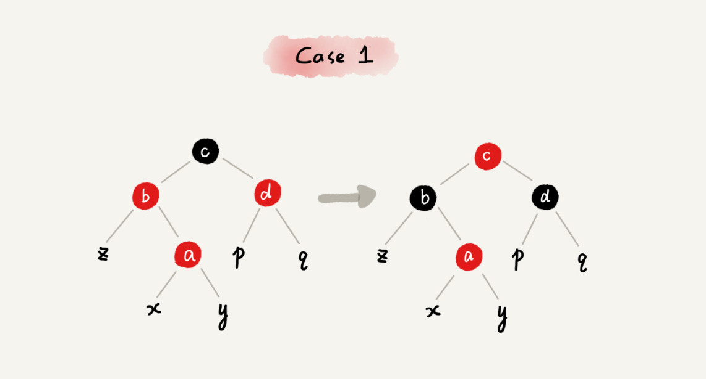
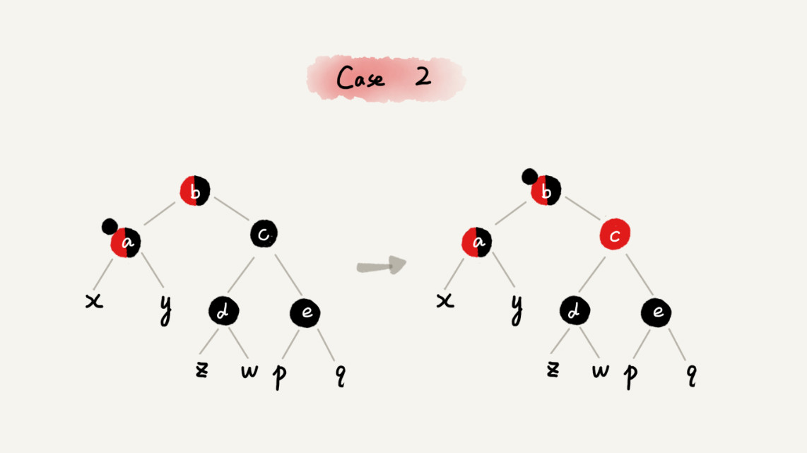
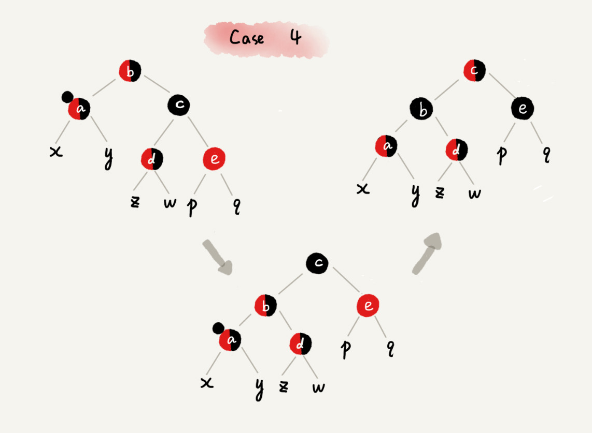

<!DOCTYPE HTML>
<html lang="" >
    <head>
        <meta charset="UTF-8">
        <meta content="text/html; charset=utf-8" http-equiv="Content-Type">
        <title>26 | 红黑树（下）：掌握这些技巧，你也可以实现一个红黑树 · GitBook</title>
        <meta http-equiv="X-UA-Compatible" content="IE=edge" />
        <meta name="description" content="">
        <meta name="generator" content="GitBook 3.2.3">
        
        
        
    
    <link rel="stylesheet" href="../gitbook/style.css">

    
            
                
                <link rel="stylesheet" href="../gitbook/gitbook-plugin-highlight/website.css">
                
            
                
                <link rel="stylesheet" href="../gitbook/gitbook-plugin-search/search.css">
                
            
                
                <link rel="stylesheet" href="../gitbook/gitbook-plugin-fontsettings/website.css">
                
            
        

    

    
        
    
        
    
        
    
        
    
        
    
        
    

        
    
    
    <meta name="HandheldFriendly" content="true"/>
    <meta name="viewport" content="width=device-width, initial-scale=1, user-scalable=no">
    <meta name="apple-mobile-web-app-capable" content="yes">
    <meta name="apple-mobile-web-app-status-bar-style" content="black">
    <link rel="apple-touch-icon-precomposed" sizes="152x152" href="../gitbook/images/apple-touch-icon-precomposed-152.png">
    <link rel="shortcut icon" href="../gitbook/images/favicon.ico" type="image/x-icon">

    
    <link rel="next" href="27.html" />
    
    
    <link rel="prev" href="25.html" />
    

    </head>
    <body>
        
<div class="book">
    <div class="book-summary">
        
            
<div id="book-search-input" role="search">
    <input type="text" placeholder="Type to search" />
</div>

            
                <nav role="navigation">
                


<ul class="summary">
    
    

    

    
        
        
    
        <li class="chapter " data-level="1.1" data-path="../">
            
                <a href="../">
            
                    
                    介绍
            
                </a>
            

            
            <ul class="articles">
                
    
        <li class="chapter " data-level="1.1.1" data-path="00.html">
            
                <a href="00.html">
            
                    
                    开篇词 | 从今天起，跨过“数据结构与算法”这道坎
            
                </a>
            

            
        </li>
    
        <li class="chapter " data-level="1.1.2" data-path="01.html">
            
                <a href="01.html">
            
                    
                    01 | 为什么要学习数据结构和算法？
            
                </a>
            

            
        </li>
    
        <li class="chapter " data-level="1.1.3" data-path="02.html">
            
                <a href="02.html">
            
                    
                    02 | 如何抓住重点，系统高效地学习数据结构与算法？
            
                </a>
            

            
        </li>
    
        <li class="chapter " data-level="1.1.4" data-path="03.html">
            
                <a href="03.html">
            
                    
                    03 | 复杂度分析（上）：如何分析、统计算法的执行效率和资源消耗？
            
                </a>
            

            
        </li>
    
        <li class="chapter " data-level="1.1.5" data-path="04.html">
            
                <a href="04.html">
            
                    
                    04 | 复杂度分析（下）：浅析最好、最坏、平均、均摊时间复杂度
            
                </a>
            

            
        </li>
    
        <li class="chapter " data-level="1.1.6" data-path="04-1.html">
            
                <a href="04-1.html">
            
                    
                    不定期福利第一期 | 数据结构与算法学习书单
            
                </a>
            

            
        </li>
    
        <li class="chapter " data-level="1.1.7" data-path="05.html">
            
                <a href="05.html">
            
                    
                    05 | 数组：为什么很多编程语言中数组都从0开始编号？
            
                </a>
            

            
        </li>
    
        <li class="chapter " data-level="1.1.8" data-path="06.html">
            
                <a href="06.html">
            
                    
                    06 | 链表（上）：如何实现LRU缓存淘汰算法?
            
                </a>
            

            
        </li>
    
        <li class="chapter " data-level="1.1.9" data-path="07.html">
            
                <a href="07.html">
            
                    
                    07 | 链表（下）：如何轻松写出正确的链表代码？
            
                </a>
            

            
        </li>
    
        <li class="chapter " data-level="1.1.10" data-path="08.html">
            
                <a href="08.html">
            
                    
                    08 | 栈：如何实现浏览器的前进和后退功能？
            
                </a>
            

            
        </li>
    
        <li class="chapter " data-level="1.1.11" data-path="09.html">
            
                <a href="09.html">
            
                    
                    09 | 队列：队列在线程池等有限资源池中的应用
            
                </a>
            

            
        </li>
    
        <li class="chapter " data-level="1.1.12" data-path="10.html">
            
                <a href="10.html">
            
                    
                    10 | 递归：如何用三行代码找到“最终推荐人”？
            
                </a>
            

            
        </li>
    
        <li class="chapter " data-level="1.1.13" data-path="11.html">
            
                <a href="11.html">
            
                    
                    11 | 排序（上）：为什么插入排序比冒泡排序更受欢迎？
            
                </a>
            

            
        </li>
    
        <li class="chapter " data-level="1.1.14" data-path="12.html">
            
                <a href="12.html">
            
                    
                    12 | 排序（下）：如何用快排思想在O(n)内查找第K大元素？
            
                </a>
            

            
        </li>
    
        <li class="chapter " data-level="1.1.15" data-path="13.html">
            
                <a href="13.html">
            
                    
                    13 | 线性排序：如何根据年龄给100万用户数据排序？
            
                </a>
            

            
        </li>
    
        <li class="chapter " data-level="1.1.16" data-path="14.html">
            
                <a href="14.html">
            
                    
                    14 | 排序优化：如何实现一个通用的、高性能的排序函数？
            
                </a>
            

            
        </li>
    
        <li class="chapter " data-level="1.1.17" data-path="15.html">
            
                <a href="15.html">
            
                    
                    15 | 二分查找（上）：如何用最省内存的方式实现快速查找功能？
            
                </a>
            

            
        </li>
    
        <li class="chapter " data-level="1.1.18" data-path="16.html">
            
                <a href="16.html">
            
                    
                    16 | 二分查找（下）：如何快速定位IP对应的省份地址？
            
                </a>
            

            
        </li>
    
        <li class="chapter " data-level="1.1.19" data-path="17.html">
            
                <a href="17.html">
            
                    
                    17 | 跳表：为什么Redis一定要用跳表来实现有序集合？
            
                </a>
            

            
        </li>
    
        <li class="chapter " data-level="1.1.20" data-path="18.html">
            
                <a href="18.html">
            
                    
                    18 | 散列表（上）：Word文档中的单词拼写检查功能是如何实现的？
            
                </a>
            

            
        </li>
    
        <li class="chapter " data-level="1.1.21" data-path="19.html">
            
                <a href="19.html">
            
                    
                    19 | 散列表（中）：如何打造一个工业级水平的散列表？
            
                </a>
            

            
        </li>
    
        <li class="chapter " data-level="1.1.22" data-path="20.html">
            
                <a href="20.html">
            
                    
                    20 | 散列表（下）：为什么散列表和链表经常会一起使用？
            
                </a>
            

            
        </li>
    
        <li class="chapter " data-level="1.1.23" data-path="21.html">
            
                <a href="21.html">
            
                    
                    21 | 哈希算法（上）：如何防止数据库中的用户信息被脱库？
            
                </a>
            

            
        </li>
    
        <li class="chapter " data-level="1.1.24" data-path="22.html">
            
                <a href="22.html">
            
                    
                    22 | 哈希算法（下）：哈希算法在分布式系统中有哪些应用？
            
                </a>
            

            
        </li>
    
        <li class="chapter " data-level="1.1.25" data-path="23.html">
            
                <a href="23.html">
            
                    
                    23 | 二叉树基础（上）：什么样的二叉树适合用数组来存储？
            
                </a>
            

            
        </li>
    
        <li class="chapter " data-level="1.1.26" data-path="24.html">
            
                <a href="24.html">
            
                    
                    24 | 二叉树基础（下）：有了如此高效的散列表，为什么还需要二叉树？
            
                </a>
            

            
        </li>
    
        <li class="chapter " data-level="1.1.27" data-path="25.html">
            
                <a href="25.html">
            
                    
                    25 | 红黑树（上）：为什么工程中都用红黑树这种二叉树？
            
                </a>
            

            
        </li>
    
        <li class="chapter active" data-level="1.1.28" data-path="26.html">
            
                <a href="26.html">
            
                    
                    26 | 红黑树（下）：掌握这些技巧，你也可以实现一个红黑树
            
                </a>
            

            
        </li>
    
        <li class="chapter " data-level="1.1.29" data-path="27.html">
            
                <a href="27.html">
            
                    
                    27 | 递归树：如何借助树来求解递归算法的时间复杂度？
            
                </a>
            

            
        </li>
    
        <li class="chapter " data-level="1.1.30" data-path="27-1.html">
            
                <a href="27-1.html">
            
                    
                    不定期福利第二期 | 王争：羁绊前行的，不是肆虐的狂风，而是内心的迷茫
            
                </a>
            

            
        </li>
    
        <li class="chapter " data-level="1.1.31" data-path="28.html">
            
                <a href="28.html">
            
                    
                    28 | 堆和堆排序：为什么说堆排序没有快速排序快？
            
                </a>
            

            
        </li>
    
        <li class="chapter " data-level="1.1.32" data-path="29.html">
            
                <a href="29.html">
            
                    
                    29 | 堆的应用：如何快速获取到Top 10最热门的搜索关键词？
            
                </a>
            

            
        </li>
    
        <li class="chapter " data-level="1.1.33" data-path="30.html">
            
                <a href="30.html">
            
                    
                    30 | 图的表示：如何存储微博、微信等社交网络中的好友关系？
            
                </a>
            

            
        </li>
    
        <li class="chapter " data-level="1.1.34" data-path="31.html">
            
                <a href="31.html">
            
                    
                    31 | 深度和广度优先搜索：如何找出社交网络中的三度好友关系？
            
                </a>
            

            
        </li>
    
        <li class="chapter " data-level="1.1.35" data-path="32.html">
            
                <a href="32.html">
            
                    
                    32 | 字符串匹配基础（上）：如何借助哈希算法实现高效字符串匹配？
            
                </a>
            

            
        </li>
    
        <li class="chapter " data-level="1.1.36" data-path="33.html">
            
                <a href="33.html">
            
                    
                    33 | 字符串匹配基础（中）：如何实现文本编辑器中的查找功能？
            
                </a>
            

            
        </li>
    
        <li class="chapter " data-level="1.1.37" data-path="34.html">
            
                <a href="34.html">
            
                    
                    34 | 字符串匹配基础（下）：如何借助BM算法轻松理解KMP算法？
            
                </a>
            

            
        </li>
    
        <li class="chapter " data-level="1.1.38" data-path="35.html">
            
                <a href="35.html">
            
                    
                    35 | Trie树：如何实现搜索引擎的搜索关键词提示功能？
            
                </a>
            

            
        </li>
    
        <li class="chapter " data-level="1.1.39" data-path="36.html">
            
                <a href="36.html">
            
                    
                    36 | AC自动机：如何用多模式串匹配实现敏感词过滤功能？
            
                </a>
            

            
        </li>
    
        <li class="chapter " data-level="1.1.40" data-path="37.html">
            
                <a href="37.html">
            
                    
                    37 | 贪心算法：如何用贪心算法实现Huffman压缩编码？
            
                </a>
            

            
        </li>
    
        <li class="chapter " data-level="1.1.41" data-path="38.html">
            
                <a href="38.html">
            
                    
                    38 | 分治算法：谈一谈大规模计算框架MapReduce中的分治思想
            
                </a>
            

            
        </li>
    
        <li class="chapter " data-level="1.1.42" data-path="38-1.html">
            
                <a href="38-1.html">
            
                    
                    不定期福利第三期 | 测一测你的算法阶段学习成果
            
                </a>
            

            
        </li>
    
        <li class="chapter " data-level="1.1.43" data-path="39.html">
            
                <a href="39.html">
            
                    
                    39 | 回溯算法：从电影《蝴蝶效应》中学习回溯算法的核心思想
            
                </a>
            

            
        </li>
    
        <li class="chapter " data-level="1.1.44" data-path="40.html">
            
                <a href="40.html">
            
                    
                    40 | 初识动态规划：如何巧妙解决“双十一”购物时的凑单问题？
            
                </a>
            

            
        </li>
    
        <li class="chapter " data-level="1.1.45" data-path="40-1.html">
            
                <a href="40-1.html">
            
                    
                    不定期福利第四期 | 刘超：我是怎么学习《数据结构与算法之美》的？
            
                </a>
            

            
        </li>
    
        <li class="chapter " data-level="1.1.46" data-path="41.html">
            
                <a href="41.html">
            
                    
                    41 | 动态规划理论：一篇文章带你彻底搞懂最优子结构、无后效性和重复子问题
            
                </a>
            

            
        </li>
    
        <li class="chapter " data-level="1.1.47" data-path="42.html">
            
                <a href="42.html">
            
                    
                    42 | 动态规划实战：如何实现搜索引擎中的拼写纠错功能？
            
                </a>
            

            
        </li>
    
        <li class="chapter " data-level="1.1.48" data-path="43.html">
            
                <a href="43.html">
            
                    
                    43 | 拓扑排序：如何确定代码源文件的编译依赖关系？
            
                </a>
            

            
        </li>
    
        <li class="chapter " data-level="1.1.49" data-path="44.html">
            
                <a href="44.html">
            
                    
                    44 | 最短路径：地图软件是如何计算出最优出行路径的？
            
                </a>
            

            
        </li>
    
        <li class="chapter " data-level="1.1.50" data-path="45.html">
            
                <a href="45.html">
            
                    
                    45 | 位图：如何实现网页爬虫中的URL去重功能？
            
                </a>
            

            
        </li>
    
        <li class="chapter " data-level="1.1.51" data-path="46.html">
            
                <a href="46.html">
            
                    
                    46 | 概率统计：如何利用朴素贝叶斯算法过滤垃圾短信？
            
                </a>
            

            
        </li>
    
        <li class="chapter " data-level="1.1.52" data-path="47.html">
            
                <a href="47.html">
            
                    
                    47 | 向量空间：如何实现一个简单的音乐推荐系统？
            
                </a>
            

            
        </li>
    
        <li class="chapter " data-level="1.1.53" data-path="48.html">
            
                <a href="48.html">
            
                    
                    48 | B+树：MySQL数据库索引是如何实现的？
            
                </a>
            

            
        </li>
    
        <li class="chapter " data-level="1.1.54" data-path="49.html">
            
                <a href="49.html">
            
                    
                    49 | 搜索：如何用A*搜索算法实现游戏中的寻路功能？
            
                </a>
            

            
        </li>
    
        <li class="chapter " data-level="1.1.55" data-path="50.html">
            
                <a href="50.html">
            
                    
                    50 | 索引：如何在海量数据中快速查找某个数据？
            
                </a>
            

            
        </li>
    
        <li class="chapter " data-level="1.1.56" data-path="51.html">
            
                <a href="51.html">
            
                    
                    51 | 并行算法：如何利用并行处理提高算法的执行效率？
            
                </a>
            

            
        </li>
    
        <li class="chapter " data-level="1.1.57" data-path="52.html">
            
                <a href="52.html">
            
                    
                    52 | 算法实战（一）：剖析Redis常用数据类型对应的数据结构
            
                </a>
            

            
        </li>
    
        <li class="chapter " data-level="1.1.58" data-path="53.html">
            
                <a href="53.html">
            
                    
                    53 | 算法实战（二）：剖析搜索引擎背后的经典数据结构和算法
            
                </a>
            

            
        </li>
    
        <li class="chapter " data-level="1.1.59" data-path="54.html">
            
                <a href="54.html">
            
                    
                    54 | 算法实战（三）：剖析高性能队列Disruptor背后的数据结构和算法
            
                </a>
            

            
        </li>
    
        <li class="chapter " data-level="1.1.60" data-path="55.html">
            
                <a href="55.html">
            
                    
                    55 | 算法实战（四）：剖析微服务接口鉴权限流背后的数据结构和算法
            
                </a>
            

            
        </li>
    
        <li class="chapter " data-level="1.1.61" data-path="56.html">
            
                <a href="56.html">
            
                    
                    56 | 算法实战（五）：如何用学过的数据结构和算法实现一个短网址系统？
            
                </a>
            

            
        </li>
    
        <li class="chapter " data-level="1.1.62" data-path="56-1.html">
            
                <a href="56-1.html">
            
                    
                    春节7天练 | Day 1：数组和链表
            
                </a>
            

            
        </li>
    
        <li class="chapter " data-level="1.1.63" data-path="56-2.html">
            
                <a href="56-2.html">
            
                    
                    春节7天练 | Day 2：栈、队列和递归
            
                </a>
            

            
        </li>
    
        <li class="chapter " data-level="1.1.64" data-path="56-3.html">
            
                <a href="56-3.html">
            
                    
                    春节7天练 | Day 3：排序和二分查找
            
                </a>
            

            
        </li>
    
        <li class="chapter " data-level="1.1.65" data-path="56-4.html">
            
                <a href="56-4.html">
            
                    
                    春节7天练 | Day 4：散列表和字符串
            
                </a>
            

            
        </li>
    
        <li class="chapter " data-level="1.1.66" data-path="56-5.html">
            
                <a href="56-5.html">
            
                    
                    春节7天练 | Day 5：二叉树和堆
            
                </a>
            

            
        </li>
    
        <li class="chapter " data-level="1.1.67" data-path="56-6.html">
            
                <a href="56-6.html">
            
                    
                    春节7天练 | Day 6：图
            
                </a>
            

            
        </li>
    
        <li class="chapter " data-level="1.1.68" data-path="56-7.html">
            
                <a href="56-7.html">
            
                    
                    春节7天练 | Day 7：贪心、分治、回溯和动态规划
            
                </a>
            

            
        </li>
    
        <li class="chapter " data-level="1.1.69" data-path="56-8.html">
            
                <a href="56-8.html">
            
                    
                    用户故事 | Jerry银银：这一年我的脑海里只有算法
            
                </a>
            

            
        </li>
    
        <li class="chapter " data-level="1.1.70" data-path="56-9.html">
            
                <a href="56-9.html">
            
                    
                    用户故事 | zixuan：站在思维的高处，才有足够的视野和能力欣赏“美”
            
                </a>
            

            
        </li>
    
        <li class="chapter " data-level="1.1.71" data-path="57.html">
            
                <a href="57.html">
            
                    
                    总结课 | 在实际开发中，如何权衡选择使用哪种数据结构和算法？
            
                </a>
            

            
        </li>
    
        <li class="chapter " data-level="1.1.72" data-path="99.html">
            
                <a href="99.html">
            
                    
                    结束语 | 送君千里，终须一别
            
                </a>
            

            
        </li>
    

            </ul>
            
        </li>
    

    

    <li class="divider"></li>

    <li>
        <a href="https://www.gitbook.com" target="blank" class="gitbook-link">
            Published with GitBook
        </a>
    </li>
</ul>


                </nav>
            
        
    </div>

    <div class="book-body">
        
            <div class="body-inner">
                
                    

<div class="book-header" role="navigation">
    

    <!-- Title -->
    <h1>
        <i class="fa fa-circle-o-notch fa-spin"></i>
        <a href=".." >26 | 红黑树（下）：掌握这些技巧，你也可以实现一个红黑树</a>
    </h1>
</div>


                    <div class="page-wrapper" tabindex="-1" role="main">
                        <div class="page-inner">
                            
<div id="book-search-results">
    <div class="search-noresults">
    
                                <section class="normal markdown-section">
                                
                                <h1 id="26--&#x7EA2;&#x9ED1;&#x6811;&#xFF08;&#x4E0B;&#xFF09;&#xFF1A;&#x638C;&#x63E1;&#x8FD9;&#x4E9B;&#x6280;&#x5DE7;&#xFF0C;&#x4F60;&#x4E5F;&#x53EF;&#x4EE5;&#x5B9E;&#x73B0;&#x4E00;&#x4E2A;&#x7EA2;&#x9ED1;&#x6811;">26 | &#x7EA2;&#x9ED1;&#x6811;&#xFF08;&#x4E0B;&#xFF09;&#xFF1A;&#x638C;&#x63E1;&#x8FD9;&#x4E9B;&#x6280;&#x5DE7;&#xFF0C;&#x4F60;&#x4E5F;&#x53EF;&#x4EE5;&#x5B9E;&#x73B0;&#x4E00;&#x4E2A;&#x7EA2;&#x9ED1;&#x6811;</h1>
<p>&#x7EA2;&#x9ED1;&#x6811;&#x662F;&#x4E00;&#x4E2A;&#x8BA9;&#x6211;&#x53C8;&#x7231;&#x53C8;&#x6068;&#x7684;&#x6570;&#x636E;&#x7ED3;&#x6784;&#xFF0C;&#x201C;&#x7231;&#x201D;&#x662F;&#x56E0;&#x4E3A;&#x5B83;&#x7A33;&#x5B9A;&#x3001;&#x9AD8;&#x6548;&#x7684;&#x6027;&#x80FD;&#xFF0C;&#x201C;&#x6068;&#x201D;&#x662F;&#x56E0;&#x4E3A;&#x5B9E;&#x73B0;&#x8D77;&#x6765;&#x5B9E;&#x5728;&#x592A;&#x96BE;&#x4E86;&#x3002;&#x6211;&#x4ECA;&#x5929;&#x8BB2;&#x7684;&#x7EA2;&#x9ED1;&#x6811;&#x7684;&#x5B9E;&#x73B0;&#xFF0C;&#x5BF9;&#x4E8E;&#x57FA;&#x7840;&#x4E0D;&#x592A;&#x597D;&#x7684;&#x540C;&#x5B66;&#xFF0C;&#x7406;&#x89E3;&#x8D77;&#x6765;&#x53EF;&#x80FD;&#x4F1A;&#x6709;&#x4E9B;&#x56F0;&#x96BE;&#x3002;&#x4F46;&#x662F;&#xFF0C;&#x6211;&#x89C9;&#x5F97;&#x6CA1;&#x5FC5;&#x8981;&#x53BB;&#x6B7B;&#x78D5;&#x5B83;&#x3002;</p>
<p>&#x6211;&#x4E3A;&#x4EC0;&#x4E48;&#x8FD9;&#x4E48;&#x8BF4;&#x5462;&#xFF1F;&#x56E0;&#x4E3A;&#xFF0C;&#x5373;&#x4FBF;&#x4F60;&#x5C06;&#x5DE6;&#x53F3;&#x65CB;&#x80CC;&#x5F97;&#x6EDA;&#x74DC;&#x70C2;&#x719F;&#xFF0C;&#x6211;&#x4FDD;&#x8BC1;&#x4F60;&#x8FC7;&#x4E0D;&#x51E0;&#x5929;&#x5C31;&#x5FD8;&#x5149;&#x4E86;&#x3002;&#x56E0;&#x4E3A;&#xFF0C;&#x5B66;&#x4E60;&#x7EA2;&#x9ED1;&#x6811;&#x7684;&#x4EE3;&#x7801;&#x5B9E;&#x73B0;&#xFF0C;&#x5BF9;&#x4E8E;&#x4F60;&#x5E73;&#x65F6;&#x505A;&#x9879;&#x76EE;&#x5F00;&#x53D1;&#x6CA1;&#x6709;&#x592A;&#x5927;&#x5E2E;&#x52A9;&#x3002;&#x5BF9;&#x4E8E;&#x7EDD;&#x5927;&#x90E8;&#x5206;&#x5F00;&#x53D1;&#x5DE5;&#x7A0B;&#x5E08;&#x6765;&#x8BF4;&#xFF0C;&#x8FD9;&#x8F88;&#x5B50;&#x4F60;&#x53EF;&#x80FD;&#x90FD;&#x7528;&#x4E0D;&#x7740;&#x4EB2;&#x624B;&#x5199;&#x4E00;&#x4E2A;&#x7EA2;&#x9ED1;&#x6811;&#x3002;&#x9664;&#x6B64;&#x4E4B;&#x5916;&#xFF0C;&#x5B83;&#x5BF9;&#x4E8E;&#x7B97;&#x6CD5;&#x9762;&#x8BD5;&#x4E5F;&#x51E0;&#x4E4E;&#x6CA1;&#x4EC0;&#x4E48;&#x7528;&#xFF0C;&#x4E00;&#x822C;&#x60C5;&#x51B5;&#x4E0B;&#xFF0C;&#x9760;&#x8C31;&#x7684;&#x9762;&#x8BD5;&#x5B98;&#x4E5F;&#x4E0D;&#x4F1A;&#x8BA9;&#x4F60;&#x624B;&#x5199;&#x7EA2;&#x9ED1;&#x6811;&#x7684;&#x3002;</p>
<p>&#x5982;&#x679C;&#x4F60;&#x5BF9;&#x6570;&#x636E;&#x7ED3;&#x6784;&#x548C;&#x7B97;&#x6CD5;&#x5F88;&#x611F;&#x5174;&#x8DA3;&#xFF0C;&#x60F3;&#x8981;&#x5F00;&#x62D3;&#x773C;&#x754C;&#x3001;&#x8BAD;&#x7EC3;&#x601D;&#x7EF4;&#xFF0C;&#x6211;&#x8FD8;&#x662F;&#x5F88;&#x63A8;&#x8350;&#x4F60;&#x770B;&#x4E00;&#x770B;&#x8FD9;&#x8282;&#x7684;&#x5185;&#x5BB9;&#x3002;&#x4F46;&#x662F;&#x5982;&#x679C;&#x5B66;&#x5B8C;&#x4ECA;&#x5929;&#x7684;&#x5185;&#x5BB9;&#x4F60;&#x8FD8;&#x89C9;&#x5F97;&#x61F5;&#x61F5;&#x61C2;&#x61C2;&#x7684;&#x8BDD;&#xFF0C;&#x4E5F;&#x4E0D;&#x8981;&#x7EA0;&#x7ED3;&#x3002;&#x6211;&#x4EEC;&#x8981;&#x6709;&#x7684;&#x653E;&#x77E2;&#x53BB;&#x5B66;&#x4E60;&#x3002;&#x4F60;&#x5148;&#x628A;&#x5E73;&#x65F6;&#x8981;&#x7528;&#x7684;&#x3001;&#x57FA;&#x7840;&#x7684;&#x4E1C;&#x897F;&#x90FD;&#x641E;&#x4F1A;&#x4E86;&#xFF0C;&#x5982;&#x679C;&#x6709;&#x4F59;&#x529B;&#x4E86;&#xFF0C;&#x518D;&#x6765;&#x6DF1;&#x5165;&#x5730;&#x7814;&#x7A76;&#x8FD9;&#x8282;&#x5185;&#x5BB9;&#x3002;</p>
<p>&#x597D;&#xFF0C;&#x6211;&#x4EEC;&#x73B0;&#x5728;&#x5C31;&#x8FDB;&#x5165;&#x6B63;&#x5F0F;&#x7684;&#x5185;&#x5BB9;&#x3002;<strong>&#x4E0A;&#x4E00;&#x8282;&#xFF0C;&#x6211;&#x4EEC;&#x8BB2;&#x5230;&#x7EA2;&#x9ED1;&#x6811;&#x5B9A;&#x4E49;&#x7684;&#x65F6;&#x5019;&#xFF0C;&#x63D0;&#x5230;&#x7EA2;&#x9ED1;&#x6811;&#x7684;&#x53F6;&#x5B50;&#x8282;&#x70B9;&#x90FD;&#x662F;&#x9ED1;&#x8272;&#x7684;&#x7A7A;&#x8282;&#x70B9;&#x3002;&#x5F53;&#x65F6;&#x6211;&#x53EA;&#x662F;&#x7C97;&#x7565;&#x5730;&#x89E3;&#x91CA;&#x4E86;&#xFF0C;&#x8FD9;&#x662F;&#x4E3A;&#x4E86;&#x4EE3;&#x7801;&#x5B9E;&#x73B0;&#x65B9;&#x4FBF;&#xFF0C;&#x90A3;&#x66F4;&#x52A0;&#x786E;&#x5207;&#x7684;&#x539F;&#x56E0;&#x662F;&#x4EC0;&#x4E48;&#x5462;&#xFF1F;</strong> &#x6211;&#x4EEC;&#x8FD9;&#x8282;&#x5C31;&#x6765;&#x8BF4;&#x4E00;&#x8BF4;&#x3002;</p>
<h2 id="&#x5B9E;&#x73B0;&#x7EA2;&#x9ED1;&#x6811;&#x7684;&#x57FA;&#x672C;&#x601D;&#x60F3;">&#x5B9E;&#x73B0;&#x7EA2;&#x9ED1;&#x6811;&#x7684;&#x57FA;&#x672C;&#x601D;&#x60F3;</h2>
<p>&#x4E0D;&#x77E5;&#x9053;&#x4F60;&#x6709;&#x6CA1;&#x6709;&#x73A9;&#x8FC7;&#x9B54;&#x65B9;&#xFF1F;&#x5176;&#x5B9E;&#x9B54;&#x65B9;&#x7684;&#x590D;&#x539F;&#x89E3;&#x6CD5;&#x662F;&#x6709;&#x56FA;&#x5B9A;&#x7B97;&#x6CD5;&#x7684;&#xFF1A;&#x9047;&#x5230;&#x54EA;&#x51E0;&#x9762;&#x662F;&#x4EC0;&#x4E48;&#x6837;&#x5B50;&#xFF0C;&#x5BF9;&#x5E94;&#x5C31;&#x600E;&#x4E48;&#x8F6C;&#x51E0;&#x4E0B;&#x3002;&#x4F60;&#x53EA;&#x8981;&#x8DDF;&#x7740;&#x8FD9;&#x4E2A;&#x590D;&#x539F;&#x6B65;&#x9AA4;&#xFF0C;&#x5C31;&#x80AF;&#x5B9A;&#x80FD;&#x5C06;&#x9B54;&#x65B9;&#x590D;&#x539F;&#x3002;</p>
<p>&#x5B9E;&#x9645;&#x4E0A;&#xFF0C;&#x7EA2;&#x9ED1;&#x6811;&#x7684;&#x5E73;&#x8861;&#x8FC7;&#x7A0B;&#x8DDF;&#x9B54;&#x65B9;&#x590D;&#x539F;&#x975E;&#x5E38;&#x795E;&#x4F3C;&#xFF0C;&#x5927;&#x81F4;&#x8FC7;&#x7A0B;&#x5C31;&#x662F;&#xFF1A;<strong>&#x9047;&#x5230;&#x4EC0;&#x4E48;&#x6837;&#x7684;&#x8282;&#x70B9;&#x6392;&#x5E03;&#xFF0C;&#x6211;&#x4EEC;&#x5C31;&#x5BF9;&#x5E94;&#x600E;&#x4E48;&#x53BB;&#x8C03;&#x6574;</strong>&#x3002;&#x53EA;&#x8981;&#x6309;&#x7167;&#x8FD9;&#x4E9B;&#x56FA;&#x5B9A;&#x7684;&#x8C03;&#x6574;&#x89C4;&#x5219;&#x6765;&#x64CD;&#x4F5C;&#xFF0C;&#x5C31;&#x80FD;&#x5C06;&#x4E00;&#x4E2A;&#x975E;&#x5E73;&#x8861;&#x7684;&#x7EA2;&#x9ED1;&#x6811;&#x8C03;&#x6574;&#x6210;&#x5E73;&#x8861;&#x7684;&#x3002;</p>
<p>&#x8FD8;&#x8BB0;&#x5F97;&#x6211;&#x4EEC;&#x524D;&#x9762;&#x8BB2;&#x8FC7;&#x7684;&#x7EA2;&#x9ED1;&#x6811;&#x7684;&#x5B9A;&#x4E49;&#x5417;&#xFF1F;&#x4ECA;&#x5929;&#x7684;&#x5185;&#x5BB9;&#x91CC;&#xFF0C;&#x6211;&#x4EEC;&#x4F1A;&#x9891;&#x7E41;&#x7528;&#x5230;&#x5B83;&#xFF0C;&#x6240;&#x4EE5;&#xFF0C;&#x6211;&#x4EEC;&#x73B0;&#x5728;&#x518D;&#x6765;&#x56DE;&#x987E;&#x4E00;&#x4E0B;&#x3002;&#x4E00;&#x68F5;&#x5408;&#x683C;&#x7684;&#x7EA2;&#x9ED1;&#x6811;&#x9700;&#x8981;&#x6EE1;&#x8DB3;&#x8FD9;&#x6837;&#x51E0;&#x4E2A;&#x8981;&#x6C42;&#xFF1A;</p>
<ul>
<li>&#x6839;&#x8282;&#x70B9;&#x662F;&#x9ED1;&#x8272;&#x7684;&#xFF1B;</li>
<li>&#x6BCF;&#x4E2A;&#x53F6;&#x5B50;&#x8282;&#x70B9;&#x90FD;&#x662F;&#x9ED1;&#x8272;&#x7684;&#x7A7A;&#x8282;&#x70B9;&#xFF08;NIL&#xFF09;&#xFF0C;&#x4E5F;&#x5C31;&#x662F;&#x8BF4;&#xFF0C;&#x53F6;&#x5B50;&#x8282;&#x70B9;&#x4E0D;&#x5B58;&#x50A8;&#x6570;&#x636E;&#xFF1B;</li>
<li>&#x4EFB;&#x4F55;&#x76F8;&#x90BB;&#x7684;&#x8282;&#x70B9;&#x90FD;&#x4E0D;&#x80FD;&#x540C;&#x65F6;&#x4E3A;&#x7EA2;&#x8272;&#xFF0C;&#x4E5F;&#x5C31;&#x662F;&#x8BF4;&#xFF0C;&#x7EA2;&#x8272;&#x8282;&#x70B9;&#x662F;&#x88AB;&#x9ED1;&#x8272;&#x8282;&#x70B9;&#x9694;&#x5F00;&#x7684;&#xFF1B;</li>
<li>&#x6BCF;&#x4E2A;&#x8282;&#x70B9;&#xFF0C;&#x4ECE;&#x8BE5;&#x8282;&#x70B9;&#x5230;&#x8FBE;&#x5176;&#x53EF;&#x8FBE;&#x53F6;&#x5B50;&#x8282;&#x70B9;&#x7684;&#x6240;&#x6709;&#x8DEF;&#x5F84;&#xFF0C;&#x90FD;&#x5305;&#x542B;&#x76F8;&#x540C;&#x6570;&#x76EE;&#x7684;&#x9ED1;&#x8272;&#x8282;&#x70B9;&#x3002;</li>
</ul>
<p>&#x5728;&#x63D2;&#x5165;&#x3001;&#x5220;&#x9664;&#x8282;&#x70B9;&#x7684;&#x8FC7;&#x7A0B;&#x4E2D;&#xFF0C;&#x7B2C;&#x4E09;&#x3001;&#x7B2C;&#x56DB;&#x70B9;&#x8981;&#x6C42;&#x53EF;&#x80FD;&#x4F1A;&#x88AB;&#x7834;&#x574F;&#xFF0C;&#x800C;&#x6211;&#x4EEC;&#x4ECA;&#x5929;&#x8981;&#x8BB2;&#x7684;&#x201C;&#x5E73;&#x8861;&#x8C03;&#x6574;&#x201D;&#xFF0C;&#x5B9E;&#x9645;&#x4E0A;&#x5C31;&#x662F;&#x8981;&#x628A;&#x88AB;&#x7834;&#x574F;&#x7684;&#x7B2C;&#x4E09;&#x3001;&#x7B2C;&#x56DB;&#x70B9;&#x6062;&#x590D;&#x8FC7;&#x6765;&#x3002;</p>
<p>&#x5728;&#x6B63;&#x5F0F;&#x5F00;&#x59CB;&#x4E4B;&#x524D;&#xFF0C;&#x6211;&#x5148;&#x4ECB;&#x7ECD;&#x4E24;&#x4E2A;&#x975E;&#x5E38;&#x91CD;&#x8981;&#x7684;&#x64CD;&#x4F5C;&#xFF0C;<strong>&#x5DE6;&#x65CB;&#xFF08;rotate left&#xFF09;</strong>&#x3001;<strong>&#x53F3;&#x65CB;&#xFF08;rotate right&#xFF09;</strong>&#x3002;&#x5DE6;&#x65CB;&#x5168;&#x79F0;&#x5176;&#x5B9E;&#x662F;&#x53EB;<strong>&#x56F4;&#x7ED5;&#x67D0;&#x4E2A;&#x8282;&#x70B9;&#x7684;&#x5DE6;&#x65CB;</strong>&#xFF0C;&#x90A3;&#x53F3;&#x65CB;&#x7684;&#x5168;&#x79F0;&#x4F30;&#x8BA1;&#x4F60;&#x5DF2;&#x7ECF;&#x731C;&#x5230;&#x4E86;&#xFF0C;&#x5C31;&#x53EB;<strong>&#x56F4;&#x7ED5;&#x67D0;&#x4E2A;&#x8282;&#x70B9;&#x7684;&#x53F3;&#x65CB;</strong>&#x3002;</p>
<p>&#x6211;&#x4EEC;&#x4E0B;&#x9762;&#x7684;&#x5E73;&#x8861;&#x8C03;&#x6574;&#x4E2D;&#xFF0C;&#x4F1A;&#x4E00;&#x76F4;&#x7528;&#x5230;&#x8FD9;&#x4E24;&#x4E2A;&#x64CD;&#x4F5C;&#xFF0C;&#x6240;&#x4EE5;&#x6211;&#x8FD9;&#x91CC;&#x753B;&#x4E86;&#x4E2A;&#x793A;&#x610F;&#x56FE;&#xFF0C;&#x5E2E;&#x52A9;&#x4F60;&#x5F7B;&#x5E95;&#x7406;&#x89E3;&#x8FD9;&#x4E24;&#x4E2A;&#x64CD;&#x4F5C;&#x3002;&#x56FE;&#x4E2D;&#x7684; a&#xFF0C;b&#xFF0C;r &#x8868;&#x793A;&#x5B50;&#x6811;&#xFF0C;&#x53EF;&#x4EE5;&#x4E3A;&#x7A7A;&#x3002;</p>
<p></p>
<p>&#x524D;&#x9762;&#x6211;&#x8BF4;&#x4E86;&#xFF0C;&#x7EA2;&#x9ED1;&#x6811;&#x7684;&#x63D2;&#x5165;&#x3001;&#x5220;&#x9664;&#x64CD;&#x4F5C;&#x4F1A;&#x7834;&#x574F;&#x7EA2;&#x9ED1;&#x6811;&#x7684;&#x5B9A;&#x4E49;&#xFF0C;&#x5177;&#x4F53;&#x6765;&#x8BF4;&#x5C31;&#x662F;&#x4F1A;&#x7834;&#x574F;&#x7EA2;&#x9ED1;&#x6811;&#x7684;&#x5E73;&#x8861;&#xFF0C;&#x6240;&#x4EE5;&#xFF0C;&#x6211;&#x4EEC;&#x73B0;&#x5728;&#x5C31;&#x6765;&#x770B;&#x4E0B;&#xFF0C;&#x7EA2;&#x9ED1;&#x6811;&#x5728;&#x63D2;&#x5165;&#x3001;&#x5220;&#x9664;&#x6570;&#x636E;&#x4E4B;&#x540E;&#xFF0C;&#x5982;&#x4F55;&#x8C03;&#x6574;&#x5E73;&#x8861;&#xFF0C;&#x7EE7;&#x7EED;&#x5F53;&#x4E00;&#x68F5;&#x5408;&#x683C;&#x7684;&#x7EA2;&#x9ED1;&#x6811;&#x7684;&#x3002;</p>
<h2 id="&#x63D2;&#x5165;&#x64CD;&#x4F5C;&#x7684;&#x5E73;&#x8861;&#x8C03;&#x6574;">&#x63D2;&#x5165;&#x64CD;&#x4F5C;&#x7684;&#x5E73;&#x8861;&#x8C03;&#x6574;</h2>
<p>&#x9996;&#x5148;&#xFF0C;&#x6211;&#x4EEC;&#x6765;&#x770B;&#x63D2;&#x5165;&#x64CD;&#x4F5C;&#x3002;</p>
<p><strong>&#x7EA2;&#x9ED1;&#x6811;&#x89C4;&#x5B9A;&#xFF0C;&#x63D2;&#x5165;&#x7684;&#x8282;&#x70B9;&#x5FC5;&#x987B;&#x662F;&#x7EA2;&#x8272;&#x7684;&#x3002;&#x800C;&#x4E14;&#xFF0C;&#x4E8C;&#x53C9;&#x67E5;&#x627E;&#x6811;&#x4E2D;&#x65B0;&#x63D2;&#x5165;&#x7684;&#x8282;&#x70B9;&#x90FD;&#x662F;&#x653E;&#x5728;&#x53F6;&#x5B50;&#x8282;&#x70B9;&#x4E0A;</strong>&#x3002;&#x6240;&#x4EE5;&#xFF0C;&#x5173;&#x4E8E;&#x63D2;&#x5165;&#x64CD;&#x4F5C;&#x7684;&#x5E73;&#x8861;&#x8C03;&#x6574;&#xFF0C;&#x6709;&#x8FD9;&#x6837;&#x4E24;&#x79CD;&#x7279;&#x6B8A;&#x60C5;&#x51B5;&#xFF0C;&#x4F46;&#x662F;&#x4E5F;&#x90FD;&#x975E;&#x5E38;&#x597D;&#x5904;&#x7406;&#x3002;</p>
<ul>
<li>&#x5982;&#x679C;&#x63D2;&#x5165;&#x8282;&#x70B9;&#x7684;&#x7236;&#x8282;&#x70B9;&#x662F;&#x9ED1;&#x8272;&#x7684;&#xFF0C;&#x90A3;&#x6211;&#x4EEC;&#x4EC0;&#x4E48;&#x90FD;&#x4E0D;&#x7528;&#x505A;&#xFF0C;&#x5B83;&#x4ECD;&#x7136;&#x6EE1;&#x8DB3;&#x7EA2;&#x9ED1;&#x6811;&#x7684;&#x5B9A;&#x4E49;&#x3002;</li>
<li>&#x5982;&#x679C;&#x63D2;&#x5165;&#x7684;&#x8282;&#x70B9;&#x662F;&#x6839;&#x8282;&#x70B9;&#xFF0C;&#x90A3;&#x6211;&#x4EEC;&#x76F4;&#x63A5;&#x6539;&#x53D8;&#x5B83;&#x7684;&#x989C;&#x8272;&#xFF0C;&#x628A;&#x5B83;&#x53D8;&#x6210;&#x9ED1;&#x8272;&#x5C31;&#x53EF;&#x4EE5;&#x4E86;&#x3002;</li>
</ul>
<p>&#x9664;&#x6B64;&#x4E4B;&#x5916;&#xFF0C;&#x5176;&#x4ED6;&#x60C5;&#x51B5;&#x90FD;&#x4F1A;&#x8FDD;&#x80CC;&#x7EA2;&#x9ED1;&#x6811;&#x7684;&#x5B9A;&#x4E49;&#xFF0C;&#x4E8E;&#x662F;&#x6211;&#x4EEC;&#x5C31;&#x9700;&#x8981;&#x8FDB;&#x884C;&#x8C03;&#x6574;&#xFF0C;&#x8C03;&#x6574;&#x7684;&#x8FC7;&#x7A0B;&#x5305;&#x542B;&#x4E24;&#x79CD;&#x57FA;&#x7840;&#x7684;&#x64CD;&#x4F5C;&#xFF1A;<strong>&#x5DE6;&#x53F3;&#x65CB;&#x8F6C;</strong>&#x548C;<strong>&#x6539;&#x53D8;&#x989C;&#x8272;</strong>&#x3002;</p>
<p>&#x7EA2;&#x9ED1;&#x6811;&#x7684;&#x5E73;&#x8861;&#x8C03;&#x6574;&#x8FC7;&#x7A0B;&#x662F;&#x4E00;&#x4E2A;&#x8FED;&#x4EE3;&#x7684;&#x8FC7;&#x7A0B;&#x3002;&#x6211;&#x4EEC;&#x628A;&#x6B63;&#x5728;&#x5904;&#x7406;&#x7684;&#x8282;&#x70B9;&#x53EB;&#x4F5C;<strong>&#x5173;&#x6CE8;&#x8282;&#x70B9;</strong>&#x3002;&#x5173;&#x6CE8;&#x8282;&#x70B9;&#x4F1A;&#x968F;&#x7740;&#x4E0D;&#x505C;&#x5730;&#x8FED;&#x4EE3;&#x5904;&#x7406;&#xFF0C;&#x800C;&#x4E0D;&#x65AD;&#x53D1;&#x751F;&#x53D8;&#x5316;&#x3002;&#x6700;&#x5F00;&#x59CB;&#x7684;&#x5173;&#x6CE8;&#x8282;&#x70B9;&#x5C31;&#x662F;&#x65B0;&#x63D2;&#x5165;&#x7684;&#x8282;&#x70B9;&#x3002;</p>
<p>&#x65B0;&#x8282;&#x70B9;&#x63D2;&#x5165;&#x4E4B;&#x540E;&#xFF0C;&#x5982;&#x679C;&#x7EA2;&#x9ED1;&#x6811;&#x7684;&#x5E73;&#x8861;&#x88AB;&#x6253;&#x7834;&#xFF0C;&#x90A3;&#x4E00;&#x822C;&#x4F1A;&#x6709;&#x4E0B;&#x9762;&#x4E09;&#x79CD;&#x60C5;&#x51B5;&#x3002;&#x6211;&#x4EEC;&#x53EA;&#x9700;&#x8981;&#x6839;&#x636E;&#x6BCF;&#x79CD;&#x60C5;&#x51B5;&#x7684;&#x7279;&#x70B9;&#xFF0C;&#x4E0D;&#x505C;&#x5730;&#x8C03;&#x6574;&#xFF0C;&#x5C31;&#x53EF;&#x4EE5;&#x8BA9;&#x7EA2;&#x9ED1;&#x6811;&#x7EE7;&#x7EED;&#x7B26;&#x5408;&#x5B9A;&#x4E49;&#xFF0C;&#x4E5F;&#x5C31;&#x662F;&#x7EE7;&#x7EED;&#x4FDD;&#x6301;&#x5E73;&#x8861;&#x3002;</p>
<p>&#x6211;&#x4EEC;&#x4E0B;&#x9762;&#x4F9D;&#x6B21;&#x6765;&#x770B;&#x6BCF;&#x79CD;&#x60C5;&#x51B5;&#x7684;&#x8C03;&#x6574;&#x8FC7;&#x7A0B;&#x3002;&#x63D0;&#x9192;&#x4F60;&#x6CE8;&#x610F;&#x4E0B;&#xFF0C;&#x4E3A;&#x4E86;&#x7B80;&#x5316;&#x63CF;&#x8FF0;&#xFF0C;&#x6211;&#x628A;&#x7236;&#x8282;&#x70B9;&#x7684;&#x5144;&#x5F1F;&#x8282;&#x70B9;&#x53EB;&#x4F5C;&#x53D4;&#x53D4;&#x8282;&#x70B9;&#xFF0C;&#x7236;&#x8282;&#x70B9;&#x7684;&#x7236;&#x8282;&#x70B9;&#x53EB;&#x4F5C;&#x7956;&#x7236;&#x8282;&#x70B9;&#x3002;</p>
<p><strong>CASE 1&#xFF1A;&#x5982;&#x679C;&#x5173;&#x6CE8;&#x8282;&#x70B9;&#x662F; a&#xFF0C;&#x5B83;&#x7684;&#x53D4;&#x53D4;&#x8282;&#x70B9; d &#x662F;&#x7EA2;&#x8272;</strong>&#xFF0C;&#x6211;&#x4EEC;&#x5C31;&#x4F9D;&#x6B21;&#x6267;&#x884C;&#x4E0B;&#x9762;&#x7684;&#x64CD;&#x4F5C;&#xFF1A;</p>
<ul>
<li>&#x5C06;&#x5173;&#x6CE8;&#x8282;&#x70B9; a &#x7684;&#x7236;&#x8282;&#x70B9; b&#x3001;&#x53D4;&#x53D4;&#x8282;&#x70B9; d &#x7684;&#x989C;&#x8272;&#x90FD;&#x8BBE;&#x7F6E;&#x6210;&#x9ED1;&#x8272;&#xFF1B;</li>
<li>&#x5C06;&#x5173;&#x6CE8;&#x8282;&#x70B9; a &#x7684;&#x7956;&#x7236;&#x8282;&#x70B9; c &#x7684;&#x989C;&#x8272;&#x8BBE;&#x7F6E;&#x6210;&#x7EA2;&#x8272;&#xFF1B;</li>
<li>&#x5173;&#x6CE8;&#x8282;&#x70B9;&#x53D8;&#x6210; a &#x7684;&#x7956;&#x7236;&#x8282;&#x70B9; c&#xFF1B;</li>
<li>&#x8DF3;&#x5230; CASE 2 &#x6216;&#x8005; CASE 3&#x3002;</li>
</ul>
<p></p>
<p><strong>CASE 2&#xFF1A;&#x5982;&#x679C;&#x5173;&#x6CE8;&#x8282;&#x70B9;&#x662F; a&#xFF0C;&#x5B83;&#x7684;&#x53D4;&#x53D4;&#x8282;&#x70B9; d &#x662F;&#x9ED1;&#x8272;&#xFF0C;&#x5173;&#x6CE8;&#x8282;&#x70B9; a &#x662F;&#x5176;&#x7236;&#x8282;&#x70B9; b &#x7684;&#x53F3;&#x5B50;&#x8282;&#x70B9;</strong>&#xFF0C;&#x6211;&#x4EEC;&#x5C31;&#x4F9D;&#x6B21;&#x6267;&#x884C;&#x4E0B;&#x9762;&#x7684;&#x64CD;&#x4F5C;&#xFF1A;</p>
<ul>
<li>&#x5173;&#x6CE8;&#x8282;&#x70B9;&#x53D8;&#x6210;&#x8282;&#x70B9; a &#x7684;&#x7236;&#x8282;&#x70B9; b&#xFF1B;</li>
<li>&#x56F4;&#x7ED5;&#x65B0;&#x7684;&#x5173;&#x6CE8;&#x8282;&#x70B9;b &#x5DE6;&#x65CB;&#xFF1B;</li>
<li>&#x8DF3;&#x5230; CASE 3&#x3002;</li>
</ul>
<p></p>
<p><strong>CASE 3&#xFF1A;&#x5982;&#x679C;&#x5173;&#x6CE8;&#x8282;&#x70B9;&#x662F; a&#xFF0C;&#x5B83;&#x7684;&#x53D4;&#x53D4;&#x8282;&#x70B9; d &#x662F;&#x9ED1;&#x8272;&#xFF0C;&#x5173;&#x6CE8;&#x8282;&#x70B9; a &#x662F;&#x5176;&#x7236;&#x8282;&#x70B9; b &#x7684;&#x5DE6;&#x5B50;&#x8282;&#x70B9;</strong>&#xFF0C;&#x6211;&#x4EEC;&#x5C31;&#x4F9D;&#x6B21;&#x6267;&#x884C;&#x4E0B;&#x9762;&#x7684;&#x64CD;&#x4F5C;&#xFF1A;</p>
<ul>
<li>&#x56F4;&#x7ED5;&#x5173;&#x6CE8;&#x8282;&#x70B9; a &#x7684;&#x7956;&#x7236;&#x8282;&#x70B9; c &#x53F3;&#x65CB;&#xFF1B;</li>
<li>&#x5C06;&#x5173;&#x6CE8;&#x8282;&#x70B9; a &#x7684;&#x7236;&#x8282;&#x70B9; b&#x3001;&#x5144;&#x5F1F;&#x8282;&#x70B9; c &#x7684;&#x989C;&#x8272;&#x4E92;&#x6362;&#x3002;</li>
<li>&#x8C03;&#x6574;&#x7ED3;&#x675F;&#x3002;</li>
</ul>
<p></p>
<h2 id="&#x5220;&#x9664;&#x64CD;&#x4F5C;&#x7684;&#x5E73;&#x8861;&#x8C03;&#x6574;">&#x5220;&#x9664;&#x64CD;&#x4F5C;&#x7684;&#x5E73;&#x8861;&#x8C03;&#x6574;</h2>
<p>&#x7EA2;&#x9ED1;&#x6811;&#x63D2;&#x5165;&#x64CD;&#x4F5C;&#x7684;&#x5E73;&#x8861;&#x8C03;&#x6574;&#x8FD8;&#x4E0D;&#x662F;&#x5F88;&#x96BE;&#xFF0C;&#x4F46;&#x662F;&#x5B83;&#x7684;&#x5220;&#x9664;&#x64CD;&#x4F5C;&#x7684;&#x5E73;&#x8861;&#x8C03;&#x6574;&#x76F8;&#x5BF9;&#x5C31;&#x8981;&#x96BE;&#x591A;&#x4E86;&#x3002;&#x4E0D;&#x8FC7;&#x539F;&#x7406;&#x90FD;&#x662F;&#x7C7B;&#x4F3C;&#x7684;&#xFF0C;&#x6211;&#x4EEC;&#x4F9D;&#x65E7;&#x53EA;&#x9700;&#x8981;&#x6839;&#x636E;&#x5173;&#x6CE8;&#x8282;&#x70B9;&#x4E0E;&#x5468;&#x56F4;&#x8282;&#x70B9;&#x7684;&#x6392;&#x5E03;&#x7279;&#x70B9;&#xFF0C;&#x6309;&#x7167;&#x4E00;&#x5B9A;&#x7684;&#x89C4;&#x5219;&#x53BB;&#x8C03;&#x6574;&#x5C31;&#x884C;&#x4E86;&#x3002;</p>
<p>&#x5220;&#x9664;&#x64CD;&#x4F5C;&#x7684;&#x5E73;&#x8861;&#x8C03;&#x6574;&#x5206;&#x4E3A;&#x4E24;&#x6B65;&#xFF0C;&#x7B2C;&#x4E00;&#x6B65;&#x662F;<strong>&#x9488;&#x5BF9;&#x5220;&#x9664;&#x8282;&#x70B9;&#x521D;&#x6B65;&#x8C03;&#x6574;</strong>&#x3002;&#x521D;&#x6B65;&#x8C03;&#x6574;&#x53EA;&#x662F;&#x4FDD;&#x8BC1;&#x6574;&#x68F5;&#x7EA2;&#x9ED1;&#x6811;&#x5728;&#x4E00;&#x4E2A;&#x8282;&#x70B9;&#x5220;&#x9664;&#x4E4B;&#x540E;&#xFF0C;&#x4ECD;&#x7136;&#x6EE1;&#x8DB3;&#x6700;&#x540E;&#x4E00;&#x6761;&#x5B9A;&#x4E49;&#x7684;&#x8981;&#x6C42;&#xFF0C;&#x4E5F;&#x5C31;&#x662F;&#x8BF4;&#xFF0C;&#x6BCF;&#x4E2A;&#x8282;&#x70B9;&#xFF0C;&#x4ECE;&#x8BE5;&#x8282;&#x70B9;&#x5230;&#x8FBE;&#x5176;&#x53EF;&#x8FBE;&#x53F6;&#x5B50;&#x8282;&#x70B9;&#x7684;&#x6240;&#x6709;&#x8DEF;&#x5F84;&#xFF0C;&#x90FD;&#x5305;&#x542B;&#x76F8;&#x540C;&#x6570;&#x76EE;&#x7684;&#x9ED1;&#x8272;&#x8282;&#x70B9;&#xFF1B;&#x7B2C;&#x4E8C;&#x6B65;&#x662F;<strong>&#x9488;&#x5BF9;&#x5173;&#x6CE8;&#x8282;&#x70B9;&#x8FDB;&#x884C;&#x4E8C;&#x6B21;&#x8C03;&#x6574;</strong>&#xFF0C;&#x8BA9;&#x5B83;&#x6EE1;&#x8DB3;&#x7EA2;&#x9ED1;&#x6811;&#x7684;&#x7B2C;&#x4E09;&#x6761;&#x5B9A;&#x4E49;&#xFF0C;&#x5373;&#x4E0D;&#x5B58;&#x5728;&#x76F8;&#x90BB;&#x7684;&#x4E24;&#x4E2A;&#x7EA2;&#x8272;&#x8282;&#x70B9;&#x3002;</p>
<h3 id="1-&#x9488;&#x5BF9;&#x5220;&#x9664;&#x8282;&#x70B9;&#x521D;&#x6B65;&#x8C03;&#x6574;">1. &#x9488;&#x5BF9;&#x5220;&#x9664;&#x8282;&#x70B9;&#x521D;&#x6B65;&#x8C03;&#x6574;</h3>
<p>&#x8FD9;&#x91CC;&#x9700;&#x8981;&#x6CE8;&#x610F;&#x4E00;&#x4E0B;&#xFF0C;&#x7EA2;&#x9ED1;&#x6811;&#x7684;&#x5B9A;&#x4E49;&#x4E2D;&#x201C;&#x53EA;&#x5305;&#x542B;&#x7EA2;&#x8272;&#x8282;&#x70B9;&#x548C;&#x9ED1;&#x8272;&#x8282;&#x70B9;&#x201D;&#xFF0C;&#x7ECF;&#x8FC7;&#x521D;&#x6B65;&#x8C03;&#x6574;&#x4E4B;&#x540E;&#xFF0C;&#x4E3A;&#x4E86;&#x4FDD;&#x8BC1;&#x6EE1;&#x8DB3;&#x7EA2;&#x9ED1;&#x6811;&#x5B9A;&#x4E49;&#x7684;&#x6700;&#x540E;&#x4E00;&#x6761;&#x8981;&#x6C42;&#xFF0C;&#x6709;&#x4E9B;&#x8282;&#x70B9;&#x4F1A;&#x88AB;&#x6807;&#x8BB0;&#x6210;&#x4E24;&#x79CD;&#x989C;&#x8272;&#xFF0C;&#x201C;&#x7EA2; - &#x9ED1;&#x201D;&#x6216;&#x8005;&#x201C;&#x9ED1; - &#x9ED1;&#x201D;&#x3002;&#x5982;&#x679C;&#x4E00;&#x4E2A;&#x8282;&#x70B9;&#x88AB;&#x6807;&#x8BB0;&#x4E3A;&#x4E86;&#x201C;&#x9ED1; - &#x9ED1;&#x201D;&#xFF0C;&#x90A3;&#x5728;&#x8BA1;&#x7B97;&#x9ED1;&#x8272;&#x8282;&#x70B9;&#x4E2A;&#x6570;&#x7684;&#x65F6;&#x5019;&#xFF0C;&#x8981;&#x7B97;&#x6210;&#x4E24;&#x4E2A;&#x9ED1;&#x8272;&#x8282;&#x70B9;&#x3002;</p>
<p>&#x5728;&#x4E0B;&#x9762;&#x7684;&#x8BB2;&#x89E3;&#x4E2D;&#xFF0C;&#x5982;&#x679C;&#x4E00;&#x4E2A;&#x8282;&#x70B9;&#x65E2;&#x53EF;&#x4EE5;&#x662F;&#x7EA2;&#x8272;&#xFF0C;&#x4E5F;&#x53EF;&#x4EE5;&#x662F;&#x9ED1;&#x8272;&#xFF0C;&#x5728;&#x753B;&#x56FE;&#x7684;&#x65F6;&#x5019;&#xFF0C;&#x6211;&#x4F1A;&#x7528;&#x4E00;&#x534A;&#x7EA2;&#x8272;&#x4E00;&#x534A;&#x9ED1;&#x8272;&#x6765;&#x8868;&#x793A;&#x3002;&#x5982;&#x679C;&#x4E00;&#x4E2A;&#x8282;&#x70B9;&#x662F;&#x201C;&#x7EA2; - &#x9ED1;&#x201D;&#x6216;&#x8005;&#x201C;&#x9ED1; - &#x9ED1;&#x201D;&#xFF0C;&#x6211;&#x4F1A;&#x7528;&#x5DE6;&#x4E0A;&#x89D2;&#x7684;&#x4E00;&#x4E2A;&#x5C0F;&#x9ED1;&#x70B9;&#x6765;&#x8868;&#x793A;&#x989D;&#x5916;&#x7684;&#x9ED1;&#x8272;&#x3002;</p>
<p><strong>CASE 1&#xFF1A;&#x5982;&#x679C;&#x8981;&#x5220;&#x9664;&#x7684;&#x8282;&#x70B9;&#x662F; a&#xFF0C;&#x5B83;&#x53EA;&#x6709;&#x4E00;&#x4E2A;&#x5B50;&#x8282;&#x70B9; b</strong>&#xFF0C;&#x90A3;&#x6211;&#x4EEC;&#x5C31;&#x4F9D;&#x6B21;&#x8FDB;&#x884C;&#x4E0B;&#x9762;&#x7684;&#x64CD;&#x4F5C;&#xFF1A;</p>
<ul>
<li>&#x5220;&#x9664;&#x8282;&#x70B9; a&#xFF0C;&#x5E76;&#x4E14;&#x628A;&#x8282;&#x70B9; b &#x66FF;&#x6362;&#x5230;&#x8282;&#x70B9; a &#x7684;&#x4F4D;&#x7F6E;&#xFF0C;&#x8FD9;&#x4E00;&#x90E8;&#x5206;&#x64CD;&#x4F5C;&#x8DDF;&#x666E;&#x901A;&#x7684;&#x4E8C;&#x53C9;&#x67E5;&#x627E;&#x6811;&#x7684;&#x5220;&#x9664;&#x64CD;&#x4F5C;&#x4E00;&#x6837;&#xFF1B;</li>
<li>&#x8282;&#x70B9; a &#x53EA;&#x80FD;&#x662F;&#x9ED1;&#x8272;&#xFF0C;&#x8282;&#x70B9; b &#x4E5F;&#x53EA;&#x80FD;&#x662F;&#x7EA2;&#x8272;&#xFF0C;&#x5176;&#x4ED6;&#x60C5;&#x51B5;&#x5747;&#x4E0D;&#x7B26;&#x5408;&#x7EA2;&#x9ED1;&#x6811;&#x7684;&#x5B9A;&#x4E49;&#x3002;&#x8FD9;&#x79CD;&#x60C5;&#x51B5;&#x4E0B;&#xFF0C;&#x6211;&#x4EEC;&#x628A;&#x8282;&#x70B9; b &#x6539;&#x4E3A;&#x9ED1;&#x8272;&#xFF1B;</li>
<li>&#x8C03;&#x6574;&#x7ED3;&#x675F;&#xFF0C;&#x4E0D;&#x9700;&#x8981;&#x8FDB;&#x884C;&#x4E8C;&#x6B21;&#x8C03;&#x6574;&#x3002;</li>
</ul>
<p></p>
<p><strong>CASE 2&#xFF1A;&#x5982;&#x679C;&#x8981;&#x5220;&#x9664;&#x7684;&#x8282;&#x70B9; a &#x6709;&#x4E24;&#x4E2A;&#x975E;&#x7A7A;&#x5B50;&#x8282;&#x70B9;&#xFF0C;&#x5E76;&#x4E14;&#x5B83;&#x7684;&#x540E;&#x7EE7;&#x8282;&#x70B9;&#x5C31;&#x662F;&#x8282;&#x70B9; a &#x7684;&#x53F3;&#x5B50;&#x8282;&#x70B9; c</strong>&#x3002;&#x6211;&#x4EEC;&#x5C31;&#x4F9D;&#x6B21;&#x8FDB;&#x884C;&#x4E0B;&#x9762;&#x7684;&#x64CD;&#x4F5C;&#xFF1A;</p>
<ul>
<li>&#x5982;&#x679C;&#x8282;&#x70B9; a &#x7684;&#x540E;&#x7EE7;&#x8282;&#x70B9;&#x5C31;&#x662F;&#x53F3;&#x5B50;&#x8282;&#x70B9; c&#xFF0C;&#x90A3;&#x53F3;&#x5B50;&#x8282;&#x70B9; c &#x80AF;&#x5B9A;&#x6CA1;&#x6709;&#x5DE6;&#x5B50;&#x6811;&#x3002;&#x6211;&#x4EEC;&#x628A;&#x8282;&#x70B9; a &#x5220;&#x9664;&#xFF0C;&#x5E76;&#x4E14;&#x5C06;&#x8282;&#x70B9; c &#x66FF;&#x6362;&#x5230;&#x8282;&#x70B9; a &#x7684;&#x4F4D;&#x7F6E;&#x3002;&#x8FD9;&#x4E00;&#x90E8;&#x5206;&#x64CD;&#x4F5C;&#x8DDF;&#x666E;&#x901A;&#x7684;&#x4E8C;&#x53C9;&#x67E5;&#x627E;&#x6811;&#x7684;&#x5220;&#x9664;&#x64CD;&#x4F5C;&#x65E0;&#x5F02;&#xFF1B;</li>
<li>&#x7136;&#x540E;&#x628A;&#x8282;&#x70B9; c &#x7684;&#x989C;&#x8272;&#x8BBE;&#x7F6E;&#x4E3A;&#x8DDF;&#x8282;&#x70B9; a &#x76F8;&#x540C;&#x7684;&#x989C;&#x8272;&#xFF1B;</li>
<li>&#x5982;&#x679C;&#x8282;&#x70B9; c &#x662F;&#x9ED1;&#x8272;&#xFF0C;&#x4E3A;&#x4E86;&#x4E0D;&#x8FDD;&#x53CD;&#x7EA2;&#x9ED1;&#x6811;&#x7684;&#x6700;&#x540E;&#x4E00;&#x6761;&#x5B9A;&#x4E49;&#xFF0C;&#x6211;&#x4EEC;&#x7ED9;&#x8282;&#x70B9; c &#x7684;&#x53F3;&#x5B50;&#x8282;&#x70B9; d &#x591A;&#x52A0;&#x4E00;&#x4E2A;&#x9ED1;&#x8272;&#xFF0C;&#x8FD9;&#x4E2A;&#x65F6;&#x5019;&#x8282;&#x70B9; d &#x5C31;&#x6210;&#x4E86;&#x201C;&#x7EA2; - &#x9ED1;&#x201D;&#x6216;&#x8005;&#x201C;&#x9ED1; - &#x9ED1;&#x201D;&#xFF1B;</li>
<li>&#x8FD9;&#x4E2A;&#x65F6;&#x5019;&#xFF0C;&#x5173;&#x6CE8;&#x8282;&#x70B9;&#x53D8;&#x6210;&#x4E86;&#x8282;&#x70B9; d&#xFF0C;&#x7B2C;&#x4E8C;&#x6B65;&#x7684;&#x8C03;&#x6574;&#x64CD;&#x4F5C;&#x5C31;&#x4F1A;&#x9488;&#x5BF9;&#x5173;&#x6CE8;&#x8282;&#x70B9;&#x6765;&#x505A;&#x3002;</li>
</ul>
<p></p>
<p><strong>CASE 3&#xFF1A;&#x5982;&#x679C;&#x8981;&#x5220;&#x9664;&#x7684;&#x662F;&#x8282;&#x70B9; a&#xFF0C;&#x5B83;&#x6709;&#x4E24;&#x4E2A;&#x975E;&#x7A7A;&#x5B50;&#x8282;&#x70B9;&#xFF0C;&#x5E76;&#x4E14;&#x8282;&#x70B9; a &#x7684;&#x540E;&#x7EE7;&#x8282;&#x70B9;&#x4E0D;&#x662F;&#x53F3;&#x5B50;&#x8282;&#x70B9;</strong>&#xFF0C;&#x6211;&#x4EEC;&#x5C31;&#x4F9D;&#x6B21;&#x8FDB;&#x884C;&#x4E0B;&#x9762;&#x7684;&#x64CD;&#x4F5C;&#xFF1A;</p>
<ul>
<li>&#x627E;&#x5230;&#x540E;&#x7EE7;&#x8282;&#x70B9; d&#xFF0C;&#x5E76;&#x5C06;&#x5B83;&#x5220;&#x9664;&#xFF0C;&#x5220;&#x9664;&#x540E;&#x7EE7;&#x8282;&#x70B9; d &#x7684;&#x8FC7;&#x7A0B;&#x53C2;&#x7167; CASE 1&#xFF1B;</li>
<li>&#x5C06;&#x8282;&#x70B9; a &#x66FF;&#x6362;&#x6210;&#x540E;&#x7EE7;&#x8282;&#x70B9; d&#xFF1B;</li>
<li>&#x628A;&#x8282;&#x70B9; d &#x7684;&#x989C;&#x8272;&#x8BBE;&#x7F6E;&#x4E3A;&#x8DDF;&#x8282;&#x70B9; a &#x76F8;&#x540C;&#x7684;&#x989C;&#x8272;&#xFF1B;</li>
<li>&#x5982;&#x679C;&#x8282;&#x70B9; d &#x662F;&#x9ED1;&#x8272;&#xFF0C;&#x4E3A;&#x4E86;&#x4E0D;&#x8FDD;&#x53CD;&#x7EA2;&#x9ED1;&#x6811;&#x7684;&#x6700;&#x540E;&#x4E00;&#x6761;&#x5B9A;&#x4E49;&#xFF0C;&#x6211;&#x4EEC;&#x7ED9;&#x8282;&#x70B9; d &#x7684;&#x53F3;&#x5B50;&#x8282;&#x70B9; c &#x591A;&#x52A0;&#x4E00;&#x4E2A;&#x9ED1;&#x8272;&#xFF0C;&#x8FD9;&#x4E2A;&#x65F6;&#x5019;&#x8282;&#x70B9; c &#x5C31;&#x6210;&#x4E86;&#x201C;&#x7EA2; - &#x9ED1;&#x201D;&#x6216;&#x8005;&#x201C;&#x9ED1; - &#x9ED1;&#x201D;&#xFF1B;</li>
<li>&#x8FD9;&#x4E2A;&#x65F6;&#x5019;&#xFF0C;&#x5173;&#x6CE8;&#x8282;&#x70B9;&#x53D8;&#x6210;&#x4E86;&#x8282;&#x70B9; c&#xFF0C;&#x7B2C;&#x4E8C;&#x6B65;&#x7684;&#x8C03;&#x6574;&#x64CD;&#x4F5C;&#x5C31;&#x4F1A;&#x9488;&#x5BF9;&#x5173;&#x6CE8;&#x8282;&#x70B9;&#x6765;&#x505A;&#x3002;</li>
</ul>
<p></p>
<h3 id="2-&#x9488;&#x5BF9;&#x5173;&#x6CE8;&#x8282;&#x70B9;&#x8FDB;&#x884C;&#x4E8C;&#x6B21;&#x8C03;&#x6574;">2. &#x9488;&#x5BF9;&#x5173;&#x6CE8;&#x8282;&#x70B9;&#x8FDB;&#x884C;&#x4E8C;&#x6B21;&#x8C03;&#x6574;</h3>
<p>&#x7ECF;&#x8FC7;&#x521D;&#x6B65;&#x8C03;&#x6574;&#x4E4B;&#x540E;&#xFF0C;&#x5173;&#x6CE8;&#x8282;&#x70B9;&#x53D8;&#x6210;&#x4E86;&#x201C;&#x7EA2; - &#x9ED1;&#x201D;&#x6216;&#x8005;&#x201C;&#x9ED1; - &#x9ED1;&#x201D;&#x8282;&#x70B9;&#x3002;&#x9488;&#x5BF9;&#x8FD9;&#x4E2A;&#x5173;&#x6CE8;&#x8282;&#x70B9;&#xFF0C;&#x6211;&#x4EEC;&#x518D;&#x5206;&#x56DB;&#x79CD;&#x60C5;&#x51B5;&#x6765;&#x8FDB;&#x884C;&#x4E8C;&#x6B21;&#x8C03;&#x6574;&#x3002;&#x4E8C;&#x6B21;&#x8C03;&#x6574;&#x662F;&#x4E3A;&#x4E86;&#x8BA9;&#x7EA2;&#x9ED1;&#x6811;&#x4E2D;&#x4E0D;&#x5B58;&#x5728;&#x76F8;&#x90BB;&#x7684;&#x7EA2;&#x8272;&#x8282;&#x70B9;&#x3002;</p>
<p><strong>CASE 1&#xFF1A;&#x5982;&#x679C;&#x5173;&#x6CE8;&#x8282;&#x70B9;&#x662F; a&#xFF0C;&#x5B83;&#x7684;&#x5144;&#x5F1F;&#x8282;&#x70B9; c &#x662F;&#x7EA2;&#x8272;&#x7684;</strong>&#xFF0C;&#x6211;&#x4EEC;&#x5C31;&#x4F9D;&#x6B21;&#x8FDB;&#x884C;&#x4E0B;&#x9762;&#x7684;&#x64CD;&#x4F5C;&#xFF1A;</p>
<ul>
<li>&#x56F4;&#x7ED5;&#x5173;&#x6CE8;&#x8282;&#x70B9; a &#x7684;&#x7236;&#x8282;&#x70B9; b &#x5DE6;&#x65CB;&#xFF1B;</li>
<li>&#x5173;&#x6CE8;&#x8282;&#x70B9; a &#x7684;&#x7236;&#x8282;&#x70B9; b &#x548C;&#x7956;&#x7236;&#x8282;&#x70B9; c &#x4EA4;&#x6362;&#x989C;&#x8272;&#xFF1B;</li>
<li>&#x5173;&#x6CE8;&#x8282;&#x70B9;&#x4E0D;&#x53D8;&#xFF1B;</li>
<li>&#x7EE7;&#x7EED;&#x4ECE;&#x56DB;&#x79CD;&#x60C5;&#x51B5;&#x4E2D;&#x9009;&#x62E9;&#x9002;&#x5408;&#x7684;&#x89C4;&#x5219;&#x6765;&#x8C03;&#x6574;&#x3002;</li>
</ul>
<p></p>
<p><strong>CASE 2&#xFF1A;&#x5982;&#x679C;&#x5173;&#x6CE8;&#x8282;&#x70B9;&#x662F; a&#xFF0C;&#x5B83;&#x7684;&#x5144;&#x5F1F;&#x8282;&#x70B9; c &#x662F;&#x9ED1;&#x8272;&#x7684;&#xFF0C;&#x5E76;&#x4E14;&#x8282;&#x70B9; c &#x7684;&#x5DE6;&#x53F3;&#x5B50;&#x8282;&#x70B9; d&#x3001;e &#x90FD;&#x662F;&#x9ED1;&#x8272;&#x7684;</strong>&#xFF0C;&#x6211;&#x4EEC;&#x5C31;&#x4F9D;&#x6B21;&#x8FDB;&#x884C;&#x4E0B;&#x9762;&#x7684;&#x64CD;&#x4F5C;&#xFF1A;</p>
<ul>
<li>&#x5C06;&#x5173;&#x6CE8;&#x8282;&#x70B9; a &#x7684;&#x5144;&#x5F1F;&#x8282;&#x70B9; c &#x7684;&#x989C;&#x8272;&#x53D8;&#x6210;&#x7EA2;&#x8272;&#xFF1B;</li>
<li>&#x4ECE;&#x5173;&#x6CE8;&#x8282;&#x70B9; a &#x4E2D;&#x53BB;&#x6389;&#x4E00;&#x4E2A;&#x9ED1;&#x8272;&#xFF0C;&#x8FD9;&#x4E2A;&#x65F6;&#x5019;&#x8282;&#x70B9; a &#x5C31;&#x662F;&#x5355;&#x7EAF;&#x7684;&#x7EA2;&#x8272;&#x6216;&#x8005;&#x9ED1;&#x8272;&#xFF1B;</li>
<li>&#x7ED9;&#x5173;&#x6CE8;&#x8282;&#x70B9; a &#x7684;&#x7236;&#x8282;&#x70B9; b &#x6DFB;&#x52A0;&#x4E00;&#x4E2A;&#x9ED1;&#x8272;&#xFF0C;&#x8FD9;&#x4E2A;&#x65F6;&#x5019;&#x8282;&#x70B9; b &#x5C31;&#x53D8;&#x6210;&#x4E86;&#x201C;&#x7EA2; - &#x9ED1;&#x201D;&#x6216;&#x8005;&#x201C;&#x9ED1; - &#x9ED1;&#x201D;&#xFF1B;</li>
<li>&#x5173;&#x6CE8;&#x8282;&#x70B9;&#x4ECE; a &#x53D8;&#x6210;&#x5176;&#x7236;&#x8282;&#x70B9; b&#xFF1B;</li>
<li>&#x7EE7;&#x7EED;&#x4ECE;&#x56DB;&#x79CD;&#x60C5;&#x51B5;&#x4E2D;&#x9009;&#x62E9;&#x7B26;&#x5408;&#x7684;&#x89C4;&#x5219;&#x6765;&#x8C03;&#x6574;&#x3002;</li>
</ul>
<p></p>
<p><strong>CASE 3&#xFF1A;&#x5982;&#x679C;&#x5173;&#x6CE8;&#x8282;&#x70B9;&#x662F; a&#xFF0C;&#x5B83;&#x7684;&#x5144;&#x5F1F;&#x8282;&#x70B9; c &#x662F;&#x9ED1;&#x8272;&#xFF0C;c &#x7684;&#x5DE6;&#x5B50;&#x8282;&#x70B9; d &#x662F;&#x7EA2;&#x8272;&#xFF0C;c &#x7684;&#x53F3;&#x5B50;&#x8282;&#x70B9; e &#x662F;&#x9ED1;&#x8272;</strong>&#xFF0C;&#x6211;&#x4EEC;&#x5C31;&#x4F9D;&#x6B21;&#x8FDB;&#x884C;&#x4E0B;&#x9762;&#x7684;&#x64CD;&#x4F5C;&#xFF1A;</p>
<ul>
<li>&#x56F4;&#x7ED5;&#x5173;&#x6CE8;&#x8282;&#x70B9; a &#x7684;&#x5144;&#x5F1F;&#x8282;&#x70B9; c &#x53F3;&#x65CB;&#xFF1B;</li>
<li>&#x8282;&#x70B9; c &#x548C;&#x8282;&#x70B9; d &#x4EA4;&#x6362;&#x989C;&#x8272;&#xFF1B;</li>
<li>&#x5173;&#x6CE8;&#x8282;&#x70B9;&#x4E0D;&#x53D8;&#xFF1B;</li>
<li>&#x8DF3;&#x8F6C;&#x5230; CASE 4&#xFF0C;&#x7EE7;&#x7EED;&#x8C03;&#x6574;&#x3002;</li>
</ul>
<p></p>
<p><strong>CASE 4&#xFF1A;&#x5982;&#x679C;&#x5173;&#x6CE8;&#x8282;&#x70B9; a &#x7684;&#x5144;&#x5F1F;&#x8282;&#x70B9; c &#x662F;&#x9ED1;&#x8272;&#x7684;&#xFF0C;&#x5E76;&#x4E14; c &#x7684;&#x53F3;&#x5B50;&#x8282;&#x70B9;&#x662F;&#x7EA2;&#x8272;&#x7684;</strong>&#xFF0C;&#x6211;&#x4EEC;&#x5C31;&#x4F9D;&#x6B21;&#x8FDB;&#x884C;&#x4E0B;&#x9762;&#x7684;&#x64CD;&#x4F5C;&#xFF1A;</p>
<ul>
<li>&#x56F4;&#x7ED5;&#x5173;&#x6CE8;&#x8282;&#x70B9; a &#x7684;&#x7236;&#x8282;&#x70B9; b &#x5DE6;&#x65CB;&#xFF1B;</li>
<li>&#x5C06;&#x5173;&#x6CE8;&#x8282;&#x70B9; a &#x7684;&#x5144;&#x5F1F;&#x8282;&#x70B9; c &#x7684;&#x989C;&#x8272;&#xFF0C;&#x8DDF;&#x5173;&#x6CE8;&#x8282;&#x70B9; a &#x7684;&#x7236;&#x8282;&#x70B9; b &#x8BBE;&#x7F6E;&#x6210;&#x76F8;&#x540C;&#x7684;&#x989C;&#x8272;&#xFF1B;</li>
<li>&#x5C06;&#x5173;&#x6CE8;&#x8282;&#x70B9; a &#x7684;&#x7236;&#x8282;&#x70B9; b &#x7684;&#x989C;&#x8272;&#x8BBE;&#x7F6E;&#x4E3A;&#x9ED1;&#x8272;&#xFF1B;</li>
<li>&#x4ECE;&#x5173;&#x6CE8;&#x8282;&#x70B9; a &#x4E2D;&#x53BB;&#x6389;&#x4E00;&#x4E2A;&#x9ED1;&#x8272;&#xFF0C;&#x8282;&#x70B9; a &#x5C31;&#x53D8;&#x6210;&#x4E86;&#x5355;&#x7EAF;&#x7684;&#x7EA2;&#x8272;&#x6216;&#x8005;&#x9ED1;&#x8272;&#xFF1B;</li>
<li>&#x5C06;&#x5173;&#x6CE8;&#x8282;&#x70B9; a &#x7684;&#x53D4;&#x53D4;&#x8282;&#x70B9; e &#x8BBE;&#x7F6E;&#x4E3A;&#x9ED1;&#x8272;&#xFF1B;</li>
<li>&#x8C03;&#x6574;&#x7ED3;&#x675F;&#x3002;</li>
</ul>
<p></p>
<h2 id="&#x89E3;&#x7B54;&#x5F00;&#x7BC7;">&#x89E3;&#x7B54;&#x5F00;&#x7BC7;</h2>
<p>&#x7EA2;&#x9ED1;&#x6811;&#x7684;&#x5E73;&#x8861;&#x8C03;&#x6574;&#x5C31;&#x8BB2;&#x5B8C;&#x4E86;&#xFF0C;&#x73B0;&#x5728;&#xFF0C;&#x4F60;&#x80FD;&#x56DE;&#x7B54;&#x5F00;&#x7BC7;&#x7684;&#x95EE;&#x9898;&#x4E86;&#x5417;&#xFF1F;&#x4E3A;&#x4EC0;&#x4E48;&#x7EA2;&#x9ED1;&#x6811;&#x7684;&#x5B9A;&#x4E49;&#x4E2D;&#xFF0C;&#x8981;&#x6C42;&#x53F6;&#x5B50;&#x8282;&#x70B9;&#x662F;&#x9ED1;&#x8272;&#x7684;&#x7A7A;&#x8282;&#x70B9;&#xFF1F;</p>
<p>&#x8981;&#x6211;&#x8BF4;&#xFF0C;&#x4E4B;&#x6240;&#x4EE5;&#x6709;&#x8FD9;&#x4E48;&#x5947;&#x602A;&#x7684;&#x8981;&#x6C42;&#xFF0C;&#x5176;&#x5B9E;&#x5C31;&#x662F;&#x4E3A;&#x4E86;&#x5B9E;&#x73B0;&#x8D77;&#x6765;&#x65B9;&#x4FBF;&#x3002;&#x53EA;&#x8981;&#x6EE1;&#x8DB3;&#x8FD9;&#x4E00;&#x6761;&#x8981;&#x6C42;&#xFF0C;&#x90A3;&#x5728;&#x4EFB;&#x4F55;&#x65F6;&#x523B;&#xFF0C;&#x7EA2;&#x9ED1;&#x6811;&#x7684;&#x5E73;&#x8861;&#x64CD;&#x4F5C;&#x90FD;&#x53EF;&#x4EE5;&#x5F52;&#x7ED3;&#x4E3A;&#x6211;&#x4EEC;&#x521A;&#x521A;&#x8BB2;&#x7684;&#x90A3;&#x51E0;&#x79CD;&#x60C5;&#x51B5;&#x3002;</p>
<p>&#x8FD8;&#x662F;&#x6709;&#x70B9;&#x4E0D;&#x597D;&#x7406;&#x89E3;&#xFF0C;&#x6211;&#x901A;&#x8FC7;&#x4E00;&#x4E2A;&#x4F8B;&#x5B50;&#x6765;&#x89E3;&#x91CA;&#x4E00;&#x4E0B;&#x3002;&#x5047;&#x8BBE;&#x7EA2;&#x9ED1;&#x6811;&#x7684;&#x5B9A;&#x4E49;&#x4E2D;&#x4E0D;&#x5305;&#x542B;&#x521A;&#x521A;&#x63D0;&#x5230;&#x7684;&#x90A3;&#x4E00;&#x6761;&#x201C;&#x53F6;&#x5B50;&#x8282;&#x70B9;&#x5FC5;&#x987B;&#x662F;&#x9ED1;&#x8272;&#x7684;&#x7A7A;&#x8282;&#x70B9;&#x201D;&#xFF0C;&#x6211;&#x4EEC;&#x5F80;&#x4E00;&#x68F5;&#x7EA2;&#x9ED1;&#x6811;&#x4E2D;&#x63D2;&#x5165;&#x4E00;&#x4E2A;&#x6570;&#x636E;&#xFF0C;&#x65B0;&#x63D2;&#x5165;&#x8282;&#x70B9;&#x7684;&#x7236;&#x8282;&#x70B9;&#x4E5F;&#x662F;&#x7EA2;&#x8272;&#x7684;&#xFF0C;&#x4E24;&#x4E2A;&#x7EA2;&#x8272;&#x7684;&#x8282;&#x70B9;&#x76F8;&#x90BB;&#xFF0C;&#x8FD9;&#x4E2A;&#x65F6;&#x5019;&#xFF0C;&#x7EA2;&#x9ED1;&#x6811;&#x7684;&#x5B9A;&#x4E49;&#x5C31;&#x88AB;&#x7834;&#x574F;&#x4E86;&#x3002;&#x90A3;&#x6211;&#x4EEC;&#x5E94;&#x8BE5;&#x5982;&#x4F55;&#x8C03;&#x6574;&#x5462;&#xFF1F;</p>
<p></p>
<p>&#x4F60;&#x4F1A;&#x53D1;&#x73B0;&#xFF0C;&#x8FD9;&#x4E2A;&#x65F6;&#x5019;&#xFF0C;&#x6211;&#x4EEC;&#x524D;&#x9762;&#x8BB2;&#x7684;&#x63D2;&#x5165;&#x65F6;&#xFF0C;&#x4E09;&#x79CD;&#x60C5;&#x51B5;&#x4E0B;&#x7684;&#x5E73;&#x8861;&#x8C03;&#x6574;&#x89C4;&#x5219;&#xFF0C;&#x6CA1;&#x6709;&#x4E00;&#x79CD;&#x662F;&#x9002;&#x7528;&#x7684;&#x3002;&#x4F46;&#x662F;&#xFF0C;&#x5982;&#x679C;&#x6211;&#x4EEC;&#x628A;&#x9ED1;&#x8272;&#x7684;&#x7A7A;&#x8282;&#x70B9;&#x90FD;&#x7ED9;&#x5B83;&#x52A0;&#x4E0A;&#xFF0C;&#x53D8;&#x6210;&#x4E0B;&#x9762;&#x8FD9;&#x6837;&#xFF0C;&#x4F60;&#x4F1A;&#x53D1;&#x73B0;&#xFF0C;&#x5B83;&#x6EE1;&#x8DB3; CASE 2 &#x4E86;&#x3002;</p>
<p></p>
<p>&#x4F60;&#x53EF;&#x80FD;&#x4F1A;&#x8BF4;&#xFF0C;&#x4F60;&#x53EF;&#x4EE5;&#x8C03;&#x6574;&#x4E00;&#x4E0B;&#x5E73;&#x8861;&#x8C03;&#x6574;&#x89C4;&#x5219;&#x554A;&#x3002;&#x6BD4;&#x5982;&#x628A; CASE 2 &#x6539;&#x4E3A;&#x201C;&#x5982;&#x679C;&#x5173;&#x6CE8;&#x8282;&#x70B9; a &#x7684;&#x53D4;&#x53D4;&#x8282;&#x70B9; b &#x662F;&#x9ED1;&#x8272;&#x6216;&#x8005;&#x4E0D;&#x5B58;&#x5728;&#xFF0C;a &#x662F;&#x7236;&#x8282;&#x70B9;&#x7684;&#x53F3;&#x5B50;&#x8282;&#x70B9;&#xFF0C;&#x5C31;&#x8FDB;&#x884C;&#x67D0;&#x67D0;&#x64CD;&#x4F5C;&#x201D;&#x3002;&#x5F53;&#x7136;&#x53EF;&#x4EE5;&#xFF0C;&#x4F46;&#x662F;&#x8FD9;&#x6837;&#x7684;&#x8BDD;&#x89C4;&#x5219;&#x5C31;&#x6CA1;&#x6709;&#x539F;&#x6765;&#x7B80;&#x6D01;&#x4E86;&#x3002;</p>
<p>&#x4F60;&#x53EF;&#x80FD;&#x8FD8;&#x4F1A;&#x8BF4;&#xFF0C;&#x8FD9;&#x6837;&#x7ED9;&#x7EA2;&#x9ED1;&#x6811;&#x6DFB;&#x52A0;&#x9ED1;&#x8272;&#x7684;&#x7A7A;&#x7684;&#x53F6;&#x5B50;&#x8282;&#x70B9;&#xFF0C;&#x4F1A;&#x4E0D;&#x4F1A;&#x6BD4;&#x8F83;&#x6D6A;&#x8D39;&#x5B58;&#x50A8;&#x7A7A;&#x95F4;&#x5462;&#xFF1F;&#x7B54;&#x6848;&#x662F;&#x4E0D;&#x4F1A;&#x7684;&#x3002;&#x867D;&#x7136;&#x6211;&#x4EEC;&#x5728;&#x8BB2;&#x89E3;&#x6216;&#x8005;&#x753B;&#x56FE;&#x7684;&#x65F6;&#x5019;&#xFF0C;&#x6BCF;&#x4E2A;&#x9ED1;&#x8272;&#x7684;&#x3001;&#x7A7A;&#x7684;&#x53F6;&#x5B50;&#x8282;&#x70B9;&#x90FD;&#x662F;&#x72EC;&#x7ACB;&#x753B;&#x51FA;&#x6765;&#x7684;&#x3002;&#x5B9E;&#x9645;&#x4E0A;&#xFF0C;&#x5728;&#x5177;&#x4F53;&#x5B9E;&#x73B0;&#x7684;&#x65F6;&#x5019;&#xFF0C;&#x6211;&#x4EEC;&#x53EA;&#x9700;&#x8981;&#x50CF;&#x4E0B;&#x9762;&#x8FD9;&#x6837;&#xFF0C;&#x5171;&#x7528;&#x4E00;&#x4E2A;&#x9ED1;&#x8272;&#x7684;&#x3001;&#x7A7A;&#x7684;&#x53F6;&#x5B50;&#x8282;&#x70B9;&#x5C31;&#x884C;&#x4E86;&#x3002;</p>
<p></p>
<h2 id="&#x5185;&#x5BB9;&#x5C0F;&#x7ED3;">&#x5185;&#x5BB9;&#x5C0F;&#x7ED3;</h2>
<p>&#x201C;&#x7EA2;&#x9ED1;&#x6811;&#x4E00;&#x5411;&#x90FD;&#x5F88;&#x96BE;&#x5B66;&#x201D;&#xFF0C;&#x6709;&#x8FD9;&#x79CD;&#x60F3;&#x6CD5;&#x7684;&#x4EBA;&#x5F88;&#x591A;&#x3002;&#x4F46;&#x662F;&#x6211;&#x611F;&#x89C9;&#xFF0C;&#x5176;&#x5B9E;&#x4E3B;&#x8981;&#x539F;&#x56E0;&#x662F;&#xFF0C;&#x5F88;&#x591A;&#x4EBA;&#x8BD5;&#x56FE;&#x53BB;&#x8BB0;&#x5FC6;&#x5B83;&#x7684;&#x5E73;&#x8861;&#x8C03;&#x6574;&#x7B56;&#x7565;&#x3002;&#x5B9E;&#x9645;&#x4E0A;&#xFF0C;&#x4F60;&#x53EA;&#x9700;&#x8981;&#x80FD;&#x770B;&#x61C2;&#x6211;&#x8BB2;&#x7684;&#x8FC7;&#x7A0B;&#xFF0C;&#x6CA1;&#x6709;&#x77E5;&#x8BC6;&#x76F2;&#x70B9;&#xFF0C;&#x5C31;&#x7B97;&#x662F;&#x638C;&#x63E1;&#x4E86;&#x8FD9;&#x90E8;&#x5206;&#x5185;&#x5BB9;&#x4E86;&#x3002;&#x6BD5;&#x7ADF;&#x5B9E;&#x9645;&#x7684;&#x8F6F;&#x4EF6;&#x5F00;&#x53D1;&#x5E76;&#x4E0D;&#x662F;&#x95ED;&#x5377;&#x8003;&#x8BD5;&#xFF0C;&#x5F53;&#x4F60;&#x771F;&#x7684;&#x9700;&#x8981;&#x5B9E;&#x73B0;&#x4E00;&#x4E2A;&#x7EA2;&#x9ED1;&#x6811;&#x7684;&#x65F6;&#x5019;&#xFF0C;&#x53EF;&#x4EE5;&#x5BF9;&#x7167;&#x7740;&#x6211;&#x8BB2;&#x7684;&#x6B65;&#x9AA4;&#xFF0C;&#x4E00;&#x70B9;&#x4E00;&#x70B9;&#x53BB;&#x5B9E;&#x73B0;&#x3002;</p>
<p>&#x73B0;&#x5728;&#xFF0C;&#x6211;&#x5C31;&#x6765;&#x603B;&#x7ED3;&#x4E00;&#x4E0B;&#xFF0C;&#x5982;&#x4F55;&#x6BD4;&#x8F83;&#x8F7B;&#x677E;&#x5730;&#x770B;&#x61C2;&#x6211;&#x4ECA;&#x5929;&#x8BB2;&#x7684;&#x64CD;&#x4F5C;&#x8FC7;&#x7A0B;&#x3002;</p>
<p>&#x7B2C;&#x4E00;&#x70B9;&#xFF0C;<strong>&#x628A;&#x7EA2;&#x9ED1;&#x6811;&#x7684;&#x5E73;&#x8861;&#x8C03;&#x6574;&#x7684;&#x8FC7;&#x7A0B;&#x6BD4;&#x4F5C;&#x9B54;&#x65B9;&#x590D;&#x539F;&#xFF0C;&#x4E0D;&#x8981;&#x8FC7;&#x4E8E;&#x6DF1;&#x7A76;&#x8FD9;&#x4E2A;&#x7B97;&#x6CD5;&#x7684;&#x6B63;&#x786E;&#x6027;</strong>&#x3002;&#x4F60;&#x53EA;&#x9700;&#x8981;&#x660E;&#x767D;&#xFF0C;&#x53EA;&#x8981;&#x6309;&#x7167;&#x56FA;&#x5B9A;&#x7684;&#x64CD;&#x4F5C;&#x6B65;&#x9AA4;&#xFF0C;&#x4FDD;&#x6301;&#x63D2;&#x5165;&#x3001;&#x5220;&#x9664;&#x7684;&#x8FC7;&#x7A0B;&#xFF0C;&#x4E0D;&#x7834;&#x574F;&#x5E73;&#x8861;&#x6811;&#x7684;&#x5B9A;&#x4E49;&#x5C31;&#x884C;&#x4E86;&#x3002;</p>
<p>&#x7B2C;&#x4E8C;&#x70B9;&#xFF0C;<strong>&#x627E;&#x51C6;&#x5173;&#x6CE8;&#x8282;&#x70B9;&#xFF0C;&#x4E0D;&#x8981;&#x641E;&#x4E22;&#x3001;&#x641E;&#x9519;&#x5173;&#x6CE8;&#x8282;&#x70B9;</strong>&#x3002;&#x56E0;&#x4E3A;&#x6BCF;&#x79CD;&#x64CD;&#x4F5C;&#x89C4;&#x5219;&#xFF0C;&#x90FD;&#x662F;&#x57FA;&#x4E8E;&#x5173;&#x6CE8;&#x8282;&#x70B9;&#x6765;&#x505A;&#x7684;&#xFF0C;&#x53EA;&#x6709;&#x5F04;&#x5BF9;&#x4E86;&#x5173;&#x6CE8;&#x8282;&#x70B9;&#xFF0C;&#x624D;&#x80FD;&#x5BF9;&#x5E94;&#x5230;&#x6B63;&#x786E;&#x7684;&#x64CD;&#x4F5C;&#x89C4;&#x5219;&#x4E2D;&#x3002;&#x5728;&#x8FED;&#x4EE3;&#x7684;&#x8C03;&#x6574;&#x8FC7;&#x7A0B;&#x4E2D;&#xFF0C;&#x5173;&#x6CE8;&#x8282;&#x70B9;&#x5728;&#x4E0D;&#x505C;&#x5730;&#x6539;&#x53D8;&#xFF0C;&#x6240;&#x4EE5;&#xFF0C;&#x8FD9;&#x4E2A;&#x8FC7;&#x7A0B;&#x4E00;&#x5B9A;&#x8981;&#x6CE8;&#x610F;&#xFF0C;&#x4E0D;&#x8981;&#x5F04;&#x4E22;&#x4E86;&#x5173;&#x6CE8;&#x8282;&#x70B9;&#x3002;</p>
<p>&#x7B2C;&#x4E09;&#x70B9;&#xFF0C;<strong>&#x63D2;&#x5165;&#x64CD;&#x4F5C;&#x7684;&#x5E73;&#x8861;&#x8C03;&#x6574;&#x6BD4;&#x8F83;&#x7B80;&#x5355;&#xFF0C;&#x4F46;&#x662F;&#x5220;&#x9664;&#x64CD;&#x4F5C;&#x5C31;&#x6BD4;&#x8F83;&#x590D;&#x6742;</strong>&#x3002;&#x9488;&#x5BF9;&#x5220;&#x9664;&#x64CD;&#x4F5C;&#xFF0C;&#x6211;&#x4EEC;&#x6709;&#x4E24;&#x6B21;&#x8C03;&#x6574;&#xFF0C;&#x7B2C;&#x4E00;&#x6B21;&#x662F;&#x9488;&#x5BF9;&#x8981;&#x5220;&#x9664;&#x7684;&#x8282;&#x70B9;&#x505A;&#x521D;&#x6B65;&#x8C03;&#x6574;&#xFF0C;&#x8BA9;&#x8C03;&#x6574;&#x540E;&#x7684;&#x7EA2;&#x9ED1;&#x6811;&#x7EE7;&#x7EED;&#x6EE1;&#x8DB3;&#x7B2C;&#x56DB;&#x6761;&#x5B9A;&#x4E49;&#xFF0C;&#x201C;&#x6BCF;&#x4E2A;&#x8282;&#x70B9;&#x5230;&#x53EF;&#x8FBE;&#x53F6;&#x5B50;&#x8282;&#x70B9;&#x7684;&#x8DEF;&#x5F84;&#x90FD;&#x5305;&#x542B;&#x76F8;&#x540C;&#x4E2A;&#x6570;&#x7684;&#x9ED1;&#x8272;&#x8282;&#x70B9;&#x201D;&#x3002;&#x4F46;&#x662F;&#x8FD9;&#x4E2A;&#x65F6;&#x5019;&#xFF0C;&#x7B2C;&#x4E09;&#x6761;&#x5B9A;&#x4E49;&#x5C31;&#x4E0D;&#x6EE1;&#x8DB3;&#x4E86;&#xFF0C;&#x6709;&#x53EF;&#x80FD;&#x4F1A;&#x5B58;&#x5728;&#x4E24;&#x4E2A;&#x7EA2;&#x8272;&#x8282;&#x70B9;&#x76F8;&#x90BB;&#x7684;&#x60C5;&#x51B5;&#x3002;&#x7B2C;&#x4E8C;&#x6B21;&#x8C03;&#x6574;&#x5C31;&#x662F;&#x89E3;&#x51B3;&#x8FD9;&#x4E2A;&#x95EE;&#x9898;&#xFF0C;&#x8BA9;&#x7EA2;&#x9ED1;&#x6811;&#x4E0D;&#x5B58;&#x5728;&#x76F8;&#x90BB;&#x7684;&#x7EA2;&#x8272;&#x8282;&#x70B9;&#x3002;</p>
<h2 id="&#x8BFE;&#x540E;&#x601D;&#x8003;">&#x8BFE;&#x540E;&#x601D;&#x8003;</h2>
<p>&#x5982;&#x679C;&#x4F60;&#x4EE5;&#x524D;&#x4E86;&#x89E3;&#x6216;&#x8005;&#x5B66;&#x4E60;&#x8FC7;&#x7EA2;&#x9ED1;&#x6811;&#xFF0C;&#x5173;&#x4E8E;&#x7EA2;&#x9ED1;&#x6811;&#x7684;&#x5B9E;&#x73B0;&#xFF0C;&#x4F60;&#x4E5F;&#x53EF;&#x4EE5;&#x5728;&#x7559;&#x8A00;&#x533A;&#x8BB2;&#x8BB2;&#xFF0C;&#x4F60;&#x662F;&#x600E;&#x6837;&#x6765;&#x5B66;&#x4E60;&#x7684;&#xFF1F;&#x5728;&#x5B66;&#x4E60;&#x7684;&#x8FC7;&#x7A0B;&#x4E2D;&#xFF0C;&#x6709;&#x8FC7;&#x4EC0;&#x4E48;&#x6837;&#x7684;&#x5FC3;&#x5F97;&#x4F53;&#x4F1A;&#xFF1F;&#x6709;&#x6CA1;&#x6709;&#x4EC0;&#x4E48;&#x597D;&#x7684;&#x5B66;&#x4E60;&#x65B9;&#x6CD5;&#xFF1F;</p>
<p>&#x6B22;&#x8FCE;&#x7559;&#x8A00;&#x548C;&#x6211;&#x5206;&#x4EAB;&#xFF0C;&#x6211;&#x4F1A;&#x7B2C;&#x4E00;&#x65F6;&#x95F4;&#x7ED9;&#x4F60;&#x53CD;&#x9988;&#x3002;</p>

                                
                                </section>
                            
    </div>
    <div class="search-results">
        <div class="has-results">
            
            <h1 class="search-results-title"><span class='search-results-count'></span> results matching "<span class='search-query'></span>"</h1>
            <ul class="search-results-list"></ul>
            
        </div>
        <div class="no-results">
            
            <h1 class="search-results-title">No results matching "<span class='search-query'></span>"</h1>
            
        </div>
    </div>
</div>

                        </div>
                    </div>
                
            </div>

            
                
                <a href="25.html" class="navigation navigation-prev " aria-label="Previous page: 25 | 红黑树（上）：为什么工程中都用红黑树这种二叉树？">
                    <i class="fa fa-angle-left"></i>
                </a>
                
                
                <a href="27.html" class="navigation navigation-next " aria-label="Next page: 27 | 递归树：如何借助树来求解递归算法的时间复杂度？">
                    <i class="fa fa-angle-right"></i>
                </a>
                
            
        
    </div>

    <script>
        var gitbook = gitbook || [];
        gitbook.push(function() {
            gitbook.page.hasChanged({"page":{"title":"26 | 红黑树（下）：掌握这些技巧，你也可以实现一个红黑树","level":"1.1.28","depth":2,"next":{"title":"27 | 递归树：如何借助树来求解递归算法的时间复杂度？","level":"1.1.29","depth":2,"path":"doc/27.md","ref":"doc/27.md","articles":[]},"previous":{"title":"25 | 红黑树（上）：为什么工程中都用红黑树这种二叉树？","level":"1.1.27","depth":2,"path":"doc/25.md","ref":"doc/25.md","articles":[]},"dir":"ltr"},"config":{"gitbook":"*","theme":"default","variables":{},"plugins":[],"pluginsConfig":{"highlight":{},"search":{},"lunr":{"maxIndexSize":1000000,"ignoreSpecialCharacters":false},"sharing":{"facebook":true,"twitter":true,"google":false,"weibo":false,"instapaper":false,"vk":false,"all":["facebook","google","twitter","weibo","instapaper"]},"fontsettings":{"theme":"white","family":"sans","size":2},"theme-default":{"styles":{"website":"styles/website.css","pdf":"styles/pdf.css","epub":"styles/epub.css","mobi":"styles/mobi.css","ebook":"styles/ebook.css","print":"styles/print.css"},"showLevel":false}},"structure":{"langs":"LANGS.md","readme":"README.md","glossary":"GLOSSARY.md","summary":"SUMMARY.md"},"pdf":{"pageNumbers":true,"fontSize":12,"fontFamily":"Arial","paperSize":"a4","chapterMark":"pagebreak","pageBreaksBefore":"/","margin":{"right":62,"left":62,"top":56,"bottom":56}},"styles":{"website":"styles/website.css","pdf":"styles/pdf.css","epub":"styles/epub.css","mobi":"styles/mobi.css","ebook":"styles/ebook.css","print":"styles/print.css"}},"file":{"path":"doc/26.md","mtime":"2019-03-20T06:24:51.431Z","type":"markdown"},"gitbook":{"version":"3.2.3","time":"2019-03-20T07:40:31.618Z"},"basePath":"..","book":{"language":""}});
        });
    </script>
</div>

        
    <script src="../gitbook/gitbook.js"></script>
    <script src="../gitbook/theme.js"></script>
    
        
        <script src="../gitbook/gitbook-plugin-search/search-engine.js"></script>
        
    
        
        <script src="../gitbook/gitbook-plugin-search/search.js"></script>
        
    
        
        <script src="../gitbook/gitbook-plugin-lunr/lunr.min.js"></script>
        
    
        
        <script src="../gitbook/gitbook-plugin-lunr/search-lunr.js"></script>
        
    
        
        <script src="../gitbook/gitbook-plugin-sharing/buttons.js"></script>
        
    
        
        <script src="../gitbook/gitbook-plugin-fontsettings/fontsettings.js"></script>
        
    

    </body>
</html>

